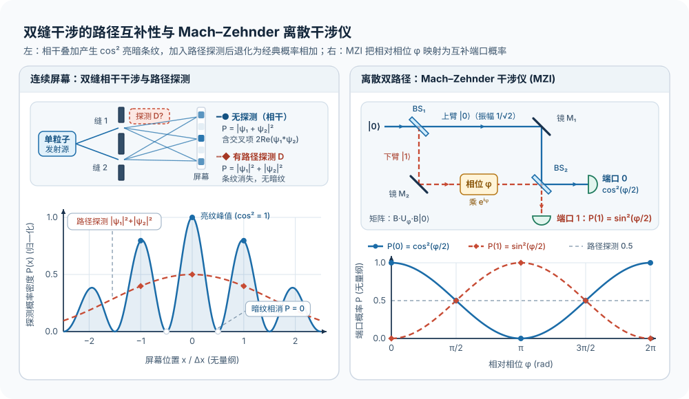
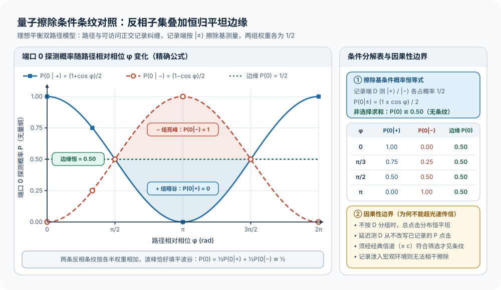

Q1｜从实验认识量子态
从第 01 章 的复数模平方、二维矩阵和条件概率出发即可阅读本章。第 02 章 的单比特状态和换基测量可随时查阅。
在第一篇里，同一个两分量态可以写成数字，也可以画在 Bloch 球上。这里再把它放回实验室：一个干涉仪的亮暗输出如何检验两条路径之间的相对相位？这一章从真实可重复的经典实验出发——单粒子双缝干涉、Mach–Zehnder 干涉仪与量子炸弹测试、顺序 Stern–Gerlach 级联实验、光子三偏振片实验，再到进阶的路径记录、量子擦除与真实探测器误差——把“制备—变换—测量”的物理过程一步步翻译成线性代数。
第一次阅读建议沿 §1–§5 追踪双缝、分束器、自旋级联和光子偏振，最后用换基测量区分相干叠加和经典混合。§6–§7 是进阶选读，讨论部分路径记录、Englert 互补关系、延迟选择量子擦除和探测误差。精读时可查第 03 章的偏迹 和第 05 章的混态与量子信道 。
1. 从双缝干涉开始：一颗粒子怎样“和自己干涉”
想象一间暗室：一端是电子枪（或光源），中间立着一块开了两条细缝的挡板，后面是一块能逐个记录落点的荧光屏。先把电子束调得很弱，弱到同一时刻从电子枪到屏幕的整段空间里，几乎永远只有一个电子在飞。
按下开关，屏幕上的画面会让人大吃一惊。第 1 个电子飞过去，屏上只“啪”地亮起一个极小的离散斑点，像一颗微小粒子撞在了某一处；第 2 个、第 3 个电子也是如此，落点零散得看不出规律。可当你耐心等上几千、几万个电子逐一打在屏上，这些原本杂乱的斑点竟慢慢拼出一条条明暗交替的干涉条纹——像水波穿过双缝后的波峰波谷叠加一样。
这不是教科书编出来的思想实验，而是已被多次高精度实测的物理事实：
单电子逐点累积 ：外村彰（Tonomura）团队在 1989 年用 50 k V 50\ \mathrm{kV} 50 kV 50 k V 50\ \mathrm{kV} 50 kV 0.41 c ≈ 1.24 × 10 8 m / s 0.41c \approx 1.24\times 10^8\ \mathrm{m/s} 0.41 c ≈ 1.24 × 1 0 8 m/s 1000 1000 1000 120 k m 120\ \mathrm{km} 120 km 1.5 m 1.5\ \mathrm{m} 1.5 m 真单光子干涉 ：如果只是把普通激光调暗，激光里仍混有极小比例的多光子脉冲。Grangier、Roger 与 Aspect（1986）先用原子级联预报单光子源打向一块 50:50 分束器，测得两端同时响的反符合参数 α a n t i = 0.18 ± 0.06 \alpha_{\mathrm{anti}}=0.18\pm 0.06 α anti = 0.18 ± 0.06 α a n t i ≥ 1 \alpha_{\mathrm{anti}}\ge 1 α anti ≥ 1 98.7 % ± 0.5 % 98.7\%\pm 0.5\% 98.7% ± 0.5% > 98 % >98\% > 98%
这些实验把经典概率逼进了死胡同。记只开缝 1 时粒子落在屏上位置 x x x P 1 ( x ) P_1(x) P 1 ( x ) P 2 ( x ) P_2(x) P 2 ( x )
P c l ( x ) = P 1 ( x ) + P 2 ( x ) .
P_{\mathrm{cl}}(x) = P_1(x) + P_2(x).
P cl ( x ) = P 1 ( x ) + P 2 ( x ) . 非负数相加只会越加越大，绝不可能越加越小。但在真实双缝实验里，许多原本单开一缝时明明能打到电子的暗纹位置，把第二条缝一打开，电子落点反而几乎降到了零——多给粒子一条路，它反而到不了那里了。
量子力学走出困境的办法非常干脆：在两条路径无法区分时，直接相加的不是非负概率，而是复数形式的概率振幅 。设单走缝 1 和单走缝 2 到达位置 x x x ψ 1 ( x ) , ψ 2 ( x ) ∈ C \psi_1(x),\psi_2(x)\in\mathbb C ψ 1 ( x ) , ψ 2 ( x ) ∈ C x x x
P 12 ( x ) = ∣ ψ 1 ( x ) + ψ 2 ( x ) ∣ 2 = ( ψ 1 ∗ ( x ) + ψ 2 ∗ ( x ) ) ( ψ 1 ( x ) + ψ 2 ( x ) ) = ∣ ψ 1 ( x ) ∣ 2 + ∣ ψ 2 ( x ) ∣ 2 + ψ 1 ∗ ( x ) ψ 2 ( x ) + ψ 2 ∗ ( x ) ψ 1 ( x ) = P 1 ( x ) + P 2 ( x ) + 2 Re [ ψ 1 ∗ ( x ) ψ 2 ( x ) ] .
\begin{aligned}
P_{12}(x)
&= \bigl|\psi_1(x)+\psi_2(x)\bigr|^2 \\
&= \bigl(\psi_1^*(x)+\psi_2^*(x)\bigr)\bigl(\psi_1(x)+\psi_2(x)\bigr) \\
&= |\psi_1(x)|^2 + |\psi_2(x)|^2 + \psi_1^*(x)\psi_2(x) + \psi_2^*(x)\psi_1(x) \\
&= P_1(x) + P_2(x) + 2\operatorname{Re}\!\left[\psi_1^*(x)\psi_2(x)\right].
\end{aligned}
P 12 ( x ) = ψ 1 ( x ) + ψ 2 ( x ) 2 = ( ψ 1 ∗ ( x ) + ψ 2 ∗ ( x ) ) ( ψ 1 ( x ) + ψ 2 ( x ) ) = ∣ ψ 1 ( x ) ∣ 2 + ∣ ψ 2 ( x ) ∣ 2 + ψ 1 ∗ ( x ) ψ 2 ( x ) + ψ 2 ∗ ( x ) ψ 1 ( x ) = P 1 ( x ) + P 2 ( x ) + 2 Re [ ψ 1 ∗ ( x ) ψ 2 ( x ) ] . 把两个复振幅写成极坐标 ψ 1 ( x ) = ∣ ψ 1 ( x ) ∣ e i ϕ 1 ( x ) \psi_1(x)=|\psi_1(x)|e^{i\phi_1(x)} ψ 1 ( x ) = ∣ ψ 1 ( x ) ∣ e i ϕ 1 ( x ) ψ 2 ( x ) = ∣ ψ 2 ( x ) ∣ e i ϕ 2 ( x ) \psi_2(x)=|\psi_2(x)|e^{i\phi_2(x)} ψ 2 ( x ) = ∣ ψ 2 ( x ) ∣ e i ϕ 2 ( x )
ψ 1 ∗ ( x ) ψ 2 ( x ) = ∣ ψ 1 ( x ) ∣ ∣ ψ 2 ( x ) ∣ e i [ ϕ 2 ( x ) − ϕ 1 ( x ) ] ,
\psi_1^*(x)\psi_2(x) = |\psi_1(x)|\,|\psi_2(x)|\,e^{i[\phi_2(x)-\phi_1(x)]},
ψ 1 ∗ ( x ) ψ 2 ( x ) = ∣ ψ 1 ( x ) ∣ ∣ ψ 2 ( x ) ∣ e i [ ϕ 2 ( x ) − ϕ 1 ( x )] , 取实部的两倍得到
P 12 ( x ) = P 1 ( x ) + P 2 ( x ) + 2 ∣ ψ 1 ( x ) ∣ ∣ ψ 2 ( x ) ∣ cos ( ϕ 2 ( x ) − ϕ 1 ( x ) ) .
P_{12}(x) = P_1(x) + P_2(x) + 2|\psi_1(x)|\,|\psi_2(x)|\cos\bigl(\phi_2(x)-\phi_1(x)\bigr).
P 12 ( x ) = P 1 ( x ) + P 2 ( x ) + 2∣ ψ 1 ( x ) ∣ ∣ ψ 2 ( x ) ∣ cos ( ϕ 2 ( x ) − ϕ 1 ( x ) ) . 这就是干涉的全部秘密。当两条路径的振幅大小相等（∣ ψ 1 ∣ = ∣ ψ 2 ∣ |\psi_1|=|\psi_2| ∣ ψ 1 ∣ = ∣ ψ 2 ∣ ϕ 2 ( x ) − ϕ 1 ( x ) \phi_2(x)-\phi_1(x) ϕ 2 ( x ) − ϕ 1 ( x ) π \pi π cos ( ϕ 2 − ϕ 1 ) = − 1 \cos(\phi_2-\phi_1)=-1 cos ( ϕ 2 − ϕ 1 ) = − 1 − 2 ∣ ψ 1 ∣ 2 -2|\psi_1|^2 − 2∣ ψ 1 ∣ 2 P 1 + P 2 P_1+P_2 P 1 + P 2 0 0 0
不过，屏幕位置 x x x Q4 ）。如果我们把“连续的屏幕”提纯成最干净的离散版本——只有两条内部路径、只有两个输出探测器 ——干涉的全部结构就能用第 01 章学过的 2 × 2 2\times 2 2 × 2 Mach–Zehnder 干涉仪 。

放大查看 ↗ 连续双缝干涉的路径互补性（相干叠加对比路径探测）与 Mach–Zehnder 离散两路径干涉仪对照 （可打开原尺寸双缝与 Mach–Zehnder 干涉仪对照图 清晰查看光路与概率曲线；左图横轴中的 Δ x \Delta x Δ x
2. 量子态是一套可检验的概率预测：Born 规则与统计抽样
在把双路径写成矩阵之前，先把实验的语言说清楚。任何一次可重复的量子实验都包含三个明确环节：
制备 ：按固定操作流程让每一轮实验从同一物理条件出发；变换 ：粒子在制备与测量之间经过分束器、相位片、磁场或脉冲等器件；测量 ：读取一组互斥的结果，并统计大量重复实验后各结果出现的频率。
这里的“重复实验”，不是把同一颗粒子捉回来反复读，而是按照同一套制备流程一遍遍放出新粒子。单轮实验只能让你听到某一个探测器“咔哒”响一声；量子态 不是屏上的单个光点，而是汇总这套制备在各种允许测量下会给出什么概率分布的数学对象。
对于只有“上路径”和“下路径”两条可选路径的粒子，我们在二维复向量空间 C 2 \mathbb C^2 C 2
∣ 0 ⟩ = [ 1 0 ] ( 上路径 ) , ∣ 1 ⟩ = [ 0 1 ] ( 下路径 ) .
|0\rangle = \begin{bmatrix}1\\0\end{bmatrix}\quad(\text{上路径}),
\qquad
|1\rangle = \begin{bmatrix}0\\1\end{bmatrix}\quad(\text{下路径}).
∣0 ⟩ = [ 1 0 ] ( 上路径 ) , ∣1 ⟩ = [ 0 1 ] ( 下路径 ) . 该粒子的一般纯态写作它们的线性组合
∣ ψ ⟩ = α ∣ 0 ⟩ + β ∣ 1 ⟩ = [ α β ] , α , β ∈ C .
|\psi\rangle = \alpha|0\rangle + \beta|1\rangle = \begin{bmatrix}\alpha\\\beta\end{bmatrix},
\qquad \alpha,\beta\in\mathbb C.
∣ ψ ⟩ = α ∣0 ⟩ + β ∣1 ⟩ = [ α β ] , α , β ∈ C . 如果在路径基 { ∣ 0 ⟩ , ∣ 1 ⟩ } \{|0\rangle,|1\rangle\} { ∣0 ⟩ , ∣1 ⟩} Born 规则 把复振幅与可测概率联系起来：
p ( 0 ) = ∣ ⟨ 0 ∣ ψ ⟩ ∣ 2 = ∣ α ∣ 2 , p ( 1 ) = ∣ ⟨ 1 ∣ ψ ⟩ ∣ 2 = ∣ β ∣ 2 .
p(0) = |\langle 0|\psi\rangle|^2 = |\alpha|^2,
\qquad
p(1) = |\langle 1|\psi\rangle|^2 = |\beta|^2.
p ( 0 ) = ∣ ⟨ 0∣ ψ ⟩ ∣ 2 = ∣ α ∣ 2 , p ( 1 ) = ∣ ⟨ 1∣ ψ ⟩ ∣ 2 = ∣ β ∣ 2 . 由于两条路径穷尽了所有互斥结果，总概率必须为 1 1 1 归一化条件 ：
∣ α ∣ 2 + ∣ β ∣ 2 = ⟨ ψ ∣ ψ ⟩ = 1.
|\alpha|^2 + |\beta|^2 = \langle\psi|\psi\rangle = 1.
∣ α ∣ 2 + ∣ β ∣ 2 = ⟨ ψ ∣ ψ ⟩ = 1. 这里有一条很关键的逻辑分界：线性代数只负责定义向量、内积和模平方怎么算，它本身并不知道自然界为什么要把模平方当成概率。把复振幅的模平方解释为测量概率的 Born 规则 ，是马克斯·玻恩（Max Born）在 1926 年研究量子散射时提出的物理公设 。归一化条件只是为了在使用 Born 规则后保证所有结果的概率之和恰好等于 1 1 1
算例：先归一化，再算概率
设某次计算得到一个未归一化向量 ∣ v ⟩ = 3 ∣ 0 ⟩ + 4 i ∣ 1 ⟩ ∈ C 2 |v\rangle = 3|0\rangle + 4i|1\rangle \in \mathbb C^2 ∣ v ⟩ = 3∣0 ⟩ + 4 i ∣1 ⟩ ∈ C 2
第一步：按左共轭内积求模长平方。 由 ⟨ v ∣ = [ 3 , − 4 i ] \langle v| = [3,\,-4i] ⟨ v ∣ = [ 3 , − 4 i ]
⟨ v ∣ v ⟩ = 3 ∗ ⋅ 3 + ( 4 i ) ∗ ( 4 i ) = 9 + ( − 4 i ) ( 4 i ) = 9 − 16 i 2 = 9 + 16 = 25.
\langle v|v\rangle
= 3^* \cdot 3 + (4i)^*(4i)
= 9 + (-4i)(4i)
= 9 - 16i^2
= 9 + 16
= 25.
⟨ v ∣ v ⟩ = 3 ∗ ⋅ 3 + ( 4 i ) ∗ ( 4 i ) = 9 + ( − 4 i ) ( 4 i ) = 9 − 16 i 2 = 9 + 16 = 25. 于是范数为 ⟨ v ∣ v ⟩ = 25 = 5 \sqrt{\langle v|v\rangle} = \sqrt{25} = 5 ⟨ v ∣ v ⟩ = 25 = 5
第二步：除以范数得到归一化态。
∣ ψ ⟩ = ∣ v ⟩ 5 = 3 5 ∣ 0 ⟩ + 4 i 5 ∣ 1 ⟩ .
|\psi\rangle = \frac{|v\rangle}{5} = \frac{3}{5}|0\rangle + \frac{4i}{5}|1\rangle.
∣ ψ ⟩ = 5 ∣ v ⟩ = 5 3 ∣0 ⟩ + 5 4 i ∣1 ⟩ . 第三步：对复振幅取模平方求概率。
p ( 0 ) = ∣ 3 5 ∣ 2 = 9 25 = 0.36 , p ( 1 ) = ∣ 4 i 5 ∣ 2 = ( − 4 i 5 ) ( 4 i 5 ) = 16 25 = 0.64.
p(0) = \left|\frac{3}{5}\right|^2 = \frac{9}{25} = 0.36,
\qquad
p(1) = \left|\frac{4i}{5}\right|^2 = \left(-\frac{4i}{5}\right)\!\left(\frac{4i}{5}\right) = \frac{16}{25} = 0.64.
p ( 0 ) = 5 3 2 = 25 9 = 0.36 , p ( 1 ) = 5 4 i 2 = ( − 5 4 i ) ( 5 4 i ) = 25 16 = 0.64. 核验概率和：9 / 25 + 16 / 25 = 1 9/25 + 16/25 = 1 9/25 + 16/25 = 1 ( 4 i / 5 ) 2 = − 16 / 25 (4i/5)^2 = -16/25 ( 4 i /5 ) 2 = − 16/25
理论概率怎样对接有限次实验计数
Born 规则给出的是概率分布，而不是要求每批实验计数刚好卡在理论比例上。假如把上面的态 ∣ ψ ⟩ |\psi\rangle ∣ ψ ⟩ N = 400 N=400 N = 400 0 0 0 n 0 n_0 n 0 p = 0.36 p=0.36 p = 0.36
E [ n 0 ] = N p = 400 × 0.36 = 144 ,
\mathbb E[n_0] = Np = 400\times 0.36 = 144,
E [ n 0 ] = Np = 400 × 0.36 = 144 , sd ( n 0 ) = N p ( 1 − p ) = 400 × 0.36 × 0.64 = 92.16 = 9.6.
\operatorname{sd}(n_0) = \sqrt{Np(1-p)} = \sqrt{400\times 0.36\times 0.64} = \sqrt{92.16} = 9.6.
sd ( n 0 ) = Np ( 1 − p ) = 400 × 0.36 × 0.64 = 92.16 = 9.6. 也就是说，这 400 轮里跑出 137 次路径 0 0 0 p ( 0 ) = 0.36 p(0)=0.36 p ( 0 ) = 0.36 N N N n 0 / N n_0/N n 0 / N 1 / N 1/\sqrt N 1/ N 0 0 0 1 1 1
3. Mach–Zehnder 干涉仪与 Elitzur–Vaidman 量子炸弹测试
现在把双缝装进一套离散光学平台：两块 50:50 平衡分束器、两面全反射镜、一条放在下路径的透明相位片，以及末端的两个单粒子探测器 0 0 0 1 1 1 0 0 0
3.1 分束器的相位约定与逐步矩阵推导
把镜面反射和分束器引入的固定光程相位吸收到两路基矢的相位零点后，每一块理想平衡分束器（§1 图中标作 BS₁、BS₂）都可以用下面的 2 × 2 2\times 2 2 × 2
B = 1 2 [ 1 1 1 − 1 ] .
B = \frac{1}{\sqrt2}\begin{bmatrix}1 & 1\\ 1 & -1\end{bmatrix}.
B = 2 1 [ 1 1 1 − 1 ] . 它的矩阵形式与第 02 章 的 Hadamard 门 H H H
B † B = 1 2 [ 1 1 1 − 1 ] [ 1 1 1 − 1 ] = 1 2 [ 1 + 1 1 − 1 1 − 1 1 + 1 ] = [ 1 0 0 1 ] = I .
B^\dagger B
= \frac{1}{2}\begin{bmatrix}1 & 1\\ 1 & -1\end{bmatrix}\begin{bmatrix}1 & 1\\ 1 & -1\end{bmatrix}
= \frac{1}{2}\begin{bmatrix}1+1 & 1-1\\ 1-1 & 1+1\end{bmatrix}
= \begin{bmatrix}1 & 0\\ 0 & 1\end{bmatrix}
= I.
B † B = 2 1 [ 1 1 1 − 1 ] [ 1 1 1 − 1 ] = 2 1 [ 1 + 1 1 − 1 1 − 1 1 + 1 ] = [ 1 0 0 1 ] = I . 因为 B † B = I B^\dagger B = I B † B = I 1 1 1
下路径上插入一块引入相对相位 ϕ ∈ R \phi\in\mathbb R ϕ ∈ R r a d \mathrm{rad} rad
U ϕ = [ 1 0 0 e i ϕ ] .
U_\phi = \begin{bmatrix}1 & 0\\ 0 & e^{i\phi}\end{bmatrix}.
U ϕ = [ 1 0 0 e i ϕ ] . 粒子从端口 0 0 0 ∣ 0 ⟩ = [ 1 , 0 ] T |0\rangle = [1,0]^T ∣0 ⟩ = [ 1 , 0 ] T B B B U ϕ U_\phi U ϕ B B B
第一步：经过第一个分束器 B B B
∣ ψ 1 ⟩ = B ∣ 0 ⟩ = 1 2 [ 1 1 1 − 1 ] [ 1 0 ] = 1 2 [ 1 ⋅ 1 + 1 ⋅ 0 1 ⋅ 1 + ( − 1 ) ⋅ 0 ] = 1 2 [ 1 1 ] = ∣ 0 ⟩ + ∣ 1 ⟩ 2 .
|\psi_1\rangle = B|0\rangle
= \frac{1}{\sqrt2}\begin{bmatrix}1 & 1\\ 1 & -1\end{bmatrix}\begin{bmatrix}1\\0\end{bmatrix}
= \frac{1}{\sqrt2}\begin{bmatrix}1\cdot 1 + 1\cdot 0\\ 1\cdot 1 + (-1)\cdot 0\end{bmatrix}
= \frac{1}{\sqrt2}\begin{bmatrix}1\\1\end{bmatrix}
= \frac{|0\rangle+|1\rangle}{\sqrt2}.
∣ ψ 1 ⟩ = B ∣0 ⟩ = 2 1 [ 1 1 1 − 1 ] [ 1 0 ] = 2 1 [ 1 ⋅ 1 + 1 ⋅ 0 1 ⋅ 1 + ( − 1 ) ⋅ 0 ] = 2 1 [ 1 1 ] = 2 ∣0 ⟩ + ∣1 ⟩ . 第二步：经过下路径相位片 U ϕ U_\phi U ϕ 上路径不变，下路径乘上 e i ϕ e^{i\phi} e i ϕ
∣ ψ 2 ⟩ = U ϕ ∣ ψ 1 ⟩ = [ 1 0 0 e i ϕ ] 1 2 [ 1 1 ] = 1 2 [ 1 e i ϕ ] = ∣ 0 ⟩ + e i ϕ ∣ 1 ⟩ 2 .
|\psi_2\rangle = U_\phi|\psi_1\rangle
= \begin{bmatrix}1 & 0\\ 0 & e^{i\phi}\end{bmatrix}\frac{1}{\sqrt2}\begin{bmatrix}1\\1\end{bmatrix}
= \frac{1}{\sqrt2}\begin{bmatrix}1\\e^{i\phi}\end{bmatrix}
= \frac{|0\rangle + e^{i\phi}|1\rangle}{\sqrt2}.
∣ ψ 2 ⟩ = U ϕ ∣ ψ 1 ⟩ = [ 1 0 0 e i ϕ ] 2 1 [ 1 1 ] = 2 1 [ 1 e i ϕ ] = 2 ∣0 ⟩ + e i ϕ ∣1 ⟩ . 第三步：经过第二个分束器 B B B
∣ ψ o u t ⟩ = B ∣ ψ 2 ⟩ = 1 2 [ 1 1 1 − 1 ] 1 2 [ 1 e i ϕ ] = 1 2 [ 1 ⋅ 1 + 1 ⋅ e i ϕ 1 ⋅ 1 + ( − 1 ) ⋅ e i ϕ ] = 1 2 [ 1 + e i ϕ 1 − e i ϕ ] .
|\psi_{\mathrm{out}}\rangle = B|\psi_2\rangle
= \frac{1}{\sqrt2}\begin{bmatrix}1 & 1\\ 1 & -1\end{bmatrix}\frac{1}{\sqrt2}\begin{bmatrix}1\\e^{i\phi}\end{bmatrix}
= \frac{1}{2}\begin{bmatrix}1\cdot 1 + 1\cdot e^{i\phi}\\ 1\cdot 1 + (-1)\cdot e^{i\phi}\end{bmatrix}
= \frac{1}{2}\begin{bmatrix}1 + e^{i\phi}\\ 1 - e^{i\phi}\end{bmatrix}.
∣ ψ out ⟩ = B ∣ ψ 2 ⟩ = 2 1 [ 1 1 1 − 1 ] 2 1 [ 1 e i ϕ ] = 2 1 [ 1 ⋅ 1 + 1 ⋅ e i ϕ 1 ⋅ 1 + ( − 1 ) ⋅ e i ϕ ] = 2 1 [ 1 + e i ϕ 1 − e i ϕ ] . 因此，到达探测器 0 0 0 1 1 1
A 0 = 1 + e i ϕ 2 , A 1 = 1 − e i ϕ 2 .
A_0 = \frac{1+e^{i\phi}}{2},
\qquad
A_1 = \frac{1-e^{i\phi}}{2}.
A 0 = 2 1 + e i ϕ , A 1 = 2 1 − e i ϕ . 最后按 Born 规则对两个总振幅分别取模平方。先算 P 0 P_0 P 0
P 0 = ∣ A 0 ∣ 2 = A 0 ∗ A 0 = 1 4 ( 1 + e − i ϕ ) ( 1 + e i ϕ ) = 1 4 ( 1 + e i ϕ + e − i ϕ + e − i ϕ e i ϕ ) = 1 4 ( 2 + 2 cos ϕ ) = 1 + cos ϕ 2 = cos 2 ( ϕ 2 ) .
\begin{aligned}
P_0 = |A_0|^2 = A_0^* A_0
&= \frac{1}{4}\bigl(1 + e^{-i\phi}\bigr)\bigl(1 + e^{i\phi}\bigr) \\
&= \frac{1}{4}\bigl(1 + e^{i\phi} + e^{-i\phi} + e^{-i\phi}e^{i\phi}\bigr) \\
&= \frac{1}{4}\bigl(2 + 2\cos\phi\bigr)
= \frac{1+\cos\phi}{2}
= \cos^2\!\left(\frac{\phi}{2}\right).
\end{aligned}
P 0 = ∣ A 0 ∣ 2 = A 0 ∗ A 0 = 4 1 ( 1 + e − i ϕ ) ( 1 + e i ϕ ) = 4 1 ( 1 + e i ϕ + e − i ϕ + e − i ϕ e i ϕ ) = 4 1 ( 2 + 2 cos ϕ ) = 2 1 + cos ϕ = cos 2 ( 2 ϕ ) . 同理算 P 1 P_1 P 1
P 1 = ∣ A 1 ∣ 2 = A 1 ∗ A 1 = 1 4 ( 1 − e − i ϕ ) ( 1 − e i ϕ ) = 1 4 ( 2 − 2 cos ϕ ) = 1 − cos ϕ 2 = sin 2 ( ϕ 2 ) .
\begin{aligned}
P_1 = |A_1|^2 = A_1^* A_1
&= \frac{1}{4}\bigl(1 - e^{-i\phi}\bigr)\bigl(1 - e^{i\phi}\bigr) \\
&= \frac{1}{4}\bigl(2 - 2\cos\phi\bigr)
= \frac{1-\cos\phi}{2}
= \sin^2\!\left(\frac{\phi}{2}\right).
\end{aligned}
P 1 = ∣ A 1 ∣ 2 = A 1 ∗ A 1 = 4 1 ( 1 − e − i ϕ ) ( 1 − e i ϕ ) = 4 1 ( 2 − 2 cos ϕ ) = 2 1 − cos ϕ = sin 2 ( 2 ϕ ) . 独立核验概率守恒：P 0 + P 1 = 1 + cos ϕ 2 + 1 − cos ϕ 2 = 1 P_0 + P_1 = \frac{1+\cos\phi}{2} + \frac{1-\cos\phi}{2} = 1 P 0 + P 1 = 2 1 + c o s ϕ + 2 1 − c o s ϕ = 1 ϕ \phi ϕ
挑四个代表性相位点算一算，既能看清复振幅怎样运作，也能把直觉定格下来：
顺便提一句，如果你去翻光学教材，常会见到另一种对称介质分束器写法：透射振幅取 1 / 2 1/\sqrt2 1/ 2 i / 2 i/\sqrt2 i / 2
B s y m = 1 2 [ 1 i i 1 ] , B s y m † B s y m = I .
B_{\mathrm{sym}} = \frac{1}{\sqrt2}\begin{bmatrix}1 & i\\ i & 1\end{bmatrix},
\qquad B_{\mathrm{sym}}^\dagger B_{\mathrm{sym}} = I.
B sym = 2 1 [ 1 i i 1 ] , B sym † B sym = I . 照同样步骤乘一遍：B s y m ∣ 0 ⟩ = 1 2 [ 1 , i ] T B_{\mathrm{sym}}|0\rangle = \frac{1}{\sqrt2}[1,i]^T B sym ∣0 ⟩ = 2 1 [ 1 , i ] T U ϕ U_\phi U ϕ 1 2 [ 1 , i e i ϕ ] T \frac{1}{\sqrt2}[1,\,ie^{i\phi}]^T 2 1 [ 1 , i e i ϕ ] T B s y m B_{\mathrm{sym}} B sym
B s y m U ϕ B s y m ∣ 0 ⟩ = 1 2 [ 1 ⋅ 1 + i ⋅ i e i ϕ i ⋅ 1 + 1 ⋅ i e i ϕ ] = 1 2 [ 1 − e i ϕ i ( 1 + e i ϕ ) ] .
B_{\mathrm{sym}}U_\phi B_{\mathrm{sym}}|0\rangle
= \frac{1}{2}\begin{bmatrix}1\cdot 1 + i\cdot ie^{i\phi}\\ i\cdot 1 + 1\cdot ie^{i\phi}\end{bmatrix}
= \frac{1}{2}\begin{bmatrix}1 - e^{i\phi}\\ i(1 + e^{i\phi})\end{bmatrix}.
B sym U ϕ B sym ∣0 ⟩ = 2 1 [ 1 ⋅ 1 + i ⋅ i e i ϕ i ⋅ 1 + 1 ⋅ i e i ϕ ] = 2 1 [ 1 − e i ϕ i ( 1 + e i ϕ ) ] . 取模平方得 P 0 s y m = 1 − cos ϕ 2 P_0^{\mathrm{sym}} = \frac{1-\cos\phi}{2} P 0 sym = 2 1 − c o s ϕ P 1 s y m = 1 + cos ϕ 2 P_1^{\mathrm{sym}} = \frac{1+\cos\phi}{2} P 1 sym = 2 1 + c o s ϕ B B B π \pi π
3.2 全局相位与相对相位
在实验台上区分两种相位极其直观：同时在上下两臂插入厚度完全相同的透明玻璃片 ，两路都会乘上同一个相位因子 e i θ g e^{i\theta_{\mathrm{g}}} e i θ g θ g ∈ R \theta_{\mathrm{g}}\in\mathbb R θ g ∈ R 全局相位 ；只给下臂单独插入玻璃片 ，才拉开两臂之间的相对相位 e i ϕ e^{i\phi} e i ϕ
检查全局相位对任意归一化测量态 ∣ m ⟩ |m\rangle ∣ m ⟩ ∣ ψ ′ ⟩ = e i θ g ∣ ψ ⟩ |\psi'\rangle = e^{i\theta_{\mathrm{g}}}|\psi\rangle ∣ ψ ′ ⟩ = e i θ g ∣ ψ ⟩ ∣ e i θ g ∣ 2 = cos 2 θ g + sin 2 θ g = 1 |e^{i\theta_{\mathrm{g}}}|^2 = \cos^2\theta_{\mathrm{g}} + \sin^2\theta_{\mathrm{g}} = 1 ∣ e i θ g ∣ 2 = cos 2 θ g + sin 2 θ g = 1
∣ ⟨ m ∣ ψ ′ ⟩ ∣ 2 = ∣ ⟨ m ∣ e i θ g ψ ⟩ ∣ 2 = ∣ e i θ g ⟨ m ∣ ψ ⟩ ∣ 2 = ∣ e i θ g ∣ 2 ∣ ⟨ m ∣ ψ ⟩ ∣ 2 = ∣ ⟨ m ∣ ψ ⟩ ∣ 2 .
|\langle m|\psi'\rangle|^2
= \bigl|\langle m|e^{i\theta_{\mathrm{g}}}\psi\rangle\bigr|^2
= \bigl|e^{i\theta_{\mathrm{g}}}\langle m|\psi\rangle\bigr|^2
= |e^{i\theta_{\mathrm{g}}}|^2\,|\langle m|\psi\rangle|^2
= |\langle m|\psi\rangle|^2.
∣ ⟨ m ∣ ψ ′ ⟩ ∣ 2 = ⟨ m ∣ e i θ g ψ ⟩ 2 = e i θ g ⟨ m ∣ ψ ⟩ 2 = ∣ e i θ g ∣ 2 ∣ ⟨ m ∣ ψ ⟩ ∣ 2 = ∣ ⟨ m ∣ ψ ⟩ ∣ 2 . 整体共有的 e i θ g e^{i\theta_{\mathrm{g}}} e i θ g ∣ ψ ⟩ |\psi\rangle ∣ ψ ⟩ e i θ g ∣ ψ ⟩ e^{i\theta_{\mathrm{g}}}|\psi\rangle e i θ g ∣ ψ ⟩ ∣ ψ ϕ ⟩ = ( ∣ 0 ⟩ + e i ϕ ∣ 1 ⟩ ) / 2 |\psi_\phi\rangle = (|0\rangle + e^{i\phi}|1\rangle)/\sqrt2 ∣ ψ ϕ ⟩ = ( ∣0 ⟩ + e i ϕ ∣1 ⟩) / 2 e i ϕ e^{i\phi} e i ϕ ∣ 1 ⟩ |1\rangle ∣1 ⟩ 1 / 2 1/2 1/2 B B B ( 1 , 0 ) (1,0) ( 1 , 0 ) ( 0 , 1 ) (0,1) ( 0 , 1 )
3.3 中间有没有留下路径记录：用输出计数分清三种实验
回到 ϕ = 0 \phi=0 ϕ = 0
对比第二行和第三行，把上路组和下路组的计数重新合起来，总和同样是约 ( 50 , 50 ) (50,50) ( 50 , 50 )
再对比第一行和第二行，就能摸清量子力学最常被误读的一条界线：决定干涉存亡的，不是实验者的眼睛有没有去看路径记录，而是物理装置有没有把两条路径变成可区分的分支 。只要环境中留下了能明确区分“走了上路还是下路”的物理痕迹，就算没人去读，条纹也会消失。
顺便区分第四种实验：如果干脆用一块不透明挡板堵住下路径，那会直接吸收掉一半粒子，剩下能通过上路径的粒子在第二个分束器后虽仍按 ( 1 / 2 , 1 / 2 ) (1/2,1/2) ( 1/2 , 1/2 ) ( 25 , 25 ) (25,25) ( 25 , 25 )
3.4 Elitzur–Vaidman 量子炸弹测试：零相互作用测量
先看困惑 ：1993 年，Elitzur 和 Vaidman 提出了一个著名的思想实验（随后很快被量子光学实验验证）。假设仓库里有一批外形完全相同的“量子炸弹”，其中一部分是真弹 ——它的光敏引信灵敏到只要有哪怕一颗光子 碰到它就会立刻爆炸；另一部分是哑弹 ——引信已坏，光子穿过它时既不爆炸也不受任何阻挡。按照经典物理，你能挑出一颗绝对确认是真弹、却又没有引爆它 的炸弹吗？答案是不能：任何经典探测手段，只要让光线照到引信就会引爆它，如果不照到引信就根本不知道引信是好是坏。
量子方案 ：把待测炸弹放到 ϕ = 0 \phi = 0 ϕ = 0 下路径 ∣ 1 ⟩ |1\rangle ∣1 ⟩ 上，从端口 0 0 0 一颗单光子 ∣ 0 ⟩ |0\rangle ∣0 ⟩
若放入的是哑弹（等同于空干涉仪） ：
光子经第一个分束器变为 ∣ 0 ⟩ + ∣ 1 ⟩ 2 \frac{|0\rangle + |1\rangle}{\sqrt2} 2 ∣0 ⟩ + ∣1 ⟩ B ∣ 0 ⟩ + ∣ 1 ⟩ 2 = ∣ 0 ⟩ B\frac{|0\rangle + |1\rangle}{\sqrt2} = |0\rangle B 2 ∣0 ⟩ + ∣1 ⟩ = ∣0 ⟩ P 0 = 1 P_0 = 1 P 0 = 1 P 1 = 0 P_1 = 0 P 1 = 0 0 0 0 只要是哑弹，暗端口 1 1 1
若放入的是真弹（下路径上多了一个“吸收即爆炸”的探测分支） ：
第一步（经过第一个分束器 B B B ：光子处于
∣ ψ 1 ⟩ = B ∣ 0 ⟩ = 1 2 ∣ 0 ⟩ + 1 2 ∣ 1 ⟩ .
|\psi_1\rangle = B|0\rangle = \frac{1}{\sqrt2}|0\rangle + \frac{1}{\sqrt2}|1\rangle.
∣ ψ 1 ⟩ = B ∣0 ⟩ = 2 1 ∣0 ⟩ + 2 1 ∣1 ⟩ . 第二步（经过下路径的真弹引信） ：真弹对下路径 ∣ 1 ⟩ |1\rangle ∣1 ⟩
以概率 ∣ 1 2 ∣ 2 = 1 2 \left|\frac{1}{\sqrt2}\right|^2 = \frac{1}{2} 2 1 2 = 2 1 50% ），光子走下路径撞上引信，炸弹爆炸 （光子被吸收，末端两个探测器都不响）；
以概率 ∣ 1 2 ∣ 2 = 1 2 \left|\frac{1}{\sqrt2}\right|^2 = \frac{1}{2} 2 1 2 = 2 1 50% ），炸弹没有爆炸 ——这意味着光子没有触发下路径引信，存活光子的条件态更新为纯粹的上路径态 ∣ 0 ⟩ |0\rangle ∣0 ⟩
第三步（未爆炸分支经过第二个分束器 B B B ：处于 ∣ 0 ⟩ |0\rangle ∣0 ⟩
B ∣ 0 ⟩ = 1 2 ∣ 0 ⟩ + 1 2 ∣ 1 ⟩ .
B|0\rangle = \frac{1}{\sqrt2}|0\rangle + \frac{1}{\sqrt2}|1\rangle.
B ∣0 ⟩ = 2 1 ∣0 ⟩ + 2 1 ∣1 ⟩ . 在未爆炸的条件下，光子从端口 0 0 0 1 1 1 ∣ 1 2 ∣ 2 = 1 2 \left|\frac{1}{\sqrt2}\right|^2 = \frac{1}{2} 2 1 2 = 2 1 1 2 \frac{1}{2} 2 1
炸弹爆炸 ：1 2 = 50 % \frac{1}{2} = 50\% 2 1 = 50% 不爆炸且端口 0 0 0 ：1 2 × 1 2 = 1 4 = 25 % \frac{1}{2}\times\frac{1}{2} = \frac{1}{4} = 25\% 2 1 × 2 1 = 4 1 = 25% 0 0 0 不爆炸且端口 1 1 1 ：1 2 × 1 2 = 1 4 = 25 % \frac{1}{2}\times\frac{1}{2} = \frac{1}{4} = 25\% 2 1 × 2 1 = 4 1 = 25% 1 1 1 0 0 0 1 1 1 100% 的确定性 知道里面是真弹——而这颗真弹纹丝未动，没有吸收到任何光子！
把两种炸弹的全部输出分支定格在一张表里：
这种现象被称为零相互作用测量 （interaction-free measurement）。当然，请保持物理清醒：它并不是光子发出了某种“隔空幽灵感知”。真正发生的事情是，真弹的存在本身改变了干涉仪的物理边界条件 ，把原本应该走下路径去和上路径在端口 1 1 1 1 1 1
在对称装置中，亮端口 0 0 0 m m m 4 − m 4^{-m} 4 − m m ≥ 2 m\ge 2 m ≥ 2 4 − ( m − 1 ) 4^{-(m-1)} 4 − ( m − 1 ) 1 / 3 1/3 1/3
若第一块分束器把概率 r ∈ ( 0 , 1 ) r\in(0,1) r ∈ ( 0 , 1 ) 1 − r 1-r 1 − r r r r r ( 1 − r ) r(1-r) r ( 1 − r ) ( 1 − r ) 2 (1-r)^2 ( 1 − r ) 2 1 − r r \sqrt{1-r}\sqrt r 1 − r r r ( 1 − r ) / [ 1 − ( 1 − r ) 2 ] = ( 1 − r ) / ( 2 − r ) r(1-r)/[1-(1-r)^2]=(1-r)/(2-r) r ( 1 − r ) / [ 1 − ( 1 − r ) 2 ] = ( 1 − r ) / ( 2 − r ) r → 0 r\to0 r → 0 1 / 2 1/2 1/2 1 / [ r ( 2 − r ) ] 1/[r(2-r)] 1/ [ r ( 2 − r )]
Kwiat 等人于 1995 年演示了零相互作用测量，并讨论了可借弱耦合循环提高效率的量子芝诺方案。1999 年的后续实验测得的最高效率为 73 % 73\% 73% η = P d e t / ( P d e t + P a b s ) \eta=P_{\mathrm{det}}/(P_{\mathrm{det}}+P_{\mathrm{abs}}) η = P det / ( P det + P abs ) P d e t P_{\mathrm{det}} P det P a b s P_{\mathrm{abs}} P abs 100 % 100\% 100% Kwiat 等，1995 ；Kwiat 等，1999 。
4. Stern–Gerlach 级联实验与光子偏振：不相容测量与马吕斯定律
前面三个实验靠“粒子走哪条空间路径”构造出二维量子态；大自然还自带另外两种极其纯粹的二态自由度——电子自旋 与光子偏振 。把它们放进级联筛选实验里，我们会亲眼撞碎“测量只是读取粒子早已写好的经典标签”的最后幻想，同时用实验说明第 02 章 中 Bloch 球的半角几何。
1922 年，格拉赫（Walther Gerlach）与施特恩（Otto Stern）在法兰克福把银加热到约 1000 ∘ C 1000\ ^\circ\mathrm{C} 1000 ∘ C 3.5 c m 3.5\ \mathrm{cm} 3.5 cm 10 3 T / m 10^3\ \mathrm{T/m} 1 0 3 T/m 0.2 m m 0.2\ \mathrm{mm} 0.2 mm 两条离散嘴唇状银纹 ，中间几乎空无一物。
从历史角度看，1922 年电子自旋概念尚未提出，这一实验直接确立了磁矩空间取向的量子化；在现代量子力学里，银原子最外层单独未配对的 5 s 5s 5 s 1 μ B 1\,\mu_B 1 μ B 自旋-1 / 2 1/2 1/2 。这里要记住一个重要边界：自旋是微观粒子的内禀量子角动量，不要把它当成一个经典刚体小球绕自身轴机械旋转 ——经典自转模型既给不出只能取两个离散值的投影，也会（若把电子视作经典电子半径量级的刚体小球）在估算表面线速度时得出超光速的荒谬结果。
在理想自旋-1 / 2 1/2 1/2 z z z S z S_z S z
S z = + ℏ 2 或 S z = − ℏ 2 ,
S_z = +\frac{\hbar}{2}\quad\text{或}\quad S_z = -\frac{\hbar}{2},
S z = + 2 ℏ 或 S z = − 2 ℏ , 对应的正交归一基态记作 ∣ z + ⟩ |z+\rangle ∣ z + ⟩ ∣ z − ⟩ |z-\rangle ∣ z − ⟩
4.1 经典“预贴标签”假说对比顺序 Stern–Gerlach 级联实验
先做最简单的同向重复检验：让一束含 N = 8000 N=8000 N = 8000 S G z SG_z S G z z − z- z − z + z+ z + 4000 4000 4000 ∣ z + ⟩ |z+\rangle ∣ z + ⟩ S G z SG_z S G z
p ( z + ∣ z + ) = ∣ ⟨ z + ∣ z + ⟩ ∣ 2 = 1 , p ( z − ∣ z + ) = ∣ ⟨ z − ∣ z + ⟩ ∣ 2 = 0.
p(z+\mid z+) = |\langle z+|z+\rangle|^2 = 1,
\qquad
p(z-\mid z+) = |\langle z-|z+\rangle|^2 = 0.
p ( z + ∣ z + ) = ∣ ⟨ z + ∣ z + ⟩ ∣ 2 = 1 , p ( z − ∣ z + ) = ∣ ⟨ z − ∣ z + ⟩ ∣ 2 = 0. 只要第一道已经筛选出 z + z+ z + 4000 4000 4000 S G z SG_z S G z z + z+ z + 1 1 1 8000 8000 8000 1 / 2 1/2 1/2
现在，把直觉推向正面碰撞：在两台 S G z SG_z S G z 横着插进一台沿水平 x x x S G x SG_x S G x x − x- x − x + x+ x + ，最后再送进第三台 S G z SG_z S G z
先按经典世界最自然的“预贴标签假说 ”预测结果：假如每颗银原子在出发前就已经同时自带两张固定不变的属性标签——一张竖直标签（z + z+ z + z − z- z − x + x+ x + x − x- x − S G z SG_z S G z S G x SG_x S G x
第一道 S G z SG_z S G z z − z- z − 4000 4000 4000 z + z+ z +
第二道 S G x SG_x S G x 4000 4000 4000 z + z+ z + x + x+ x + 2000 2000 2000
第三道 S G z SG_z S G z 2000 2000 2000 经典预贴标签假说必然预言：100% 全是 z + z+ z + 2000 2000 2000 z − z- z − 0 0 0
然而，真实实验和量子力学给出的结果直接否定了“预贴标签假说”。沿 x x x z z z
∣ x + ⟩ = ∣ z + ⟩ + ∣ z − ⟩ 2 , ∣ x − ⟩ = ∣ z + ⟩ − ∣ z − ⟩ 2 .
|x+\rangle = \frac{|z+\rangle + |z-\rangle}{\sqrt2},
\qquad
|x-\rangle = \frac{|z+\rangle - |z-\rangle}{\sqrt2}.
∣ x + ⟩ = 2 ∣ z + ⟩ + ∣ z − ⟩ , ∣ x − ⟩ = 2 ∣ z + ⟩ − ∣ z − ⟩ . 把两式相加、相减再除以 2 \sqrt2 2 z z z x x x
∣ z + ⟩ = ∣ x + ⟩ + ∣ x − ⟩ 2 , ∣ z − ⟩ = ∣ x + ⟩ − ∣ x − ⟩ 2 .
|z+\rangle = \frac{|x+\rangle + |x-\rangle}{\sqrt2},
\qquad
|z-\rangle = \frac{|x+\rangle - |x-\rangle}{\sqrt2}.
∣ z + ⟩ = 2 ∣ x + ⟩ + ∣ x − ⟩ , ∣ z − ⟩ = 2 ∣ x + ⟩ − ∣ x − ⟩ . 拿草稿纸一步步追踪 N = 8000 N = 8000 N = 8000
经过第一台 S G z SG_z S G z z − z- z − ：条件通过率 1 / 2 1/2 1/2 8000 × 1 2 = 4000 8000 \times \frac{1}{2} = 4000 8000 × 2 1 = 4000 ∣ z + ⟩ |z+\rangle ∣ z + ⟩
进入 S G x SG_x S G x x − x- x − ：由 ∣ z + ⟩ = ∣ x + ⟩ + ∣ x − ⟩ 2 |z+\rangle = \frac{|x+\rangle+|x-\rangle}{\sqrt2} ∣ z + ⟩ = 2 ∣ x + ⟩ + ∣ x − ⟩
p ( x + ∣ z + ) = ∣ ⟨ x + ∣ z + ⟩ ∣ 2 = ∣ 1 2 ∣ 2 = 1 2 , p ( x − ∣ z + ) = ∣ ⟨ x − ∣ z + ⟩ ∣ 2 = 1 2 .
p(x+\mid z+) = |\langle x+|z+\rangle|^2 = \left|\frac{1}{\sqrt2}\right|^2 = \frac{1}{2},
\qquad
p(x-\mid z+) = |\langle x-|z+\rangle|^2 = \frac{1}{2}.
p ( x + ∣ z + ) = ∣ ⟨ x + ∣ z + ⟩ ∣ 2 = 2 1 2 = 2 1 , p ( x − ∣ z + ) = ∣ ⟨ x − ∣ z + ⟩ ∣ 2 = 2 1 . 挡住 x − x- x − 4000 个 里平均留下 4000 × 1 2 = 2000 4000 \times \frac{1}{2} = 2000 4000 × 2 1 = 2000 ∣ x + ⟩ |x+\rangle ∣ x + ⟩
最后进入末级 S G z SG_z S G z ：对 ∣ x + ⟩ = ∣ z + ⟩ + ∣ z − ⟩ 2 |x+\rangle = \frac{|z+\rangle+|z-\rangle}{\sqrt2} ∣ x + ⟩ = 2 ∣ z + ⟩ + ∣ z − ⟩ z z z
p ( z + ∣ x + ) = ∣ ⟨ z + ∣ x + ⟩ ∣ 2 = 1 2 , p ( z − ∣ x + ) = ∣ ⟨ z − ∣ x + ⟩ ∣ 2 = 1 2 .
p(z+\mid x+) = |\langle z+|x+\rangle|^2 = \frac{1}{2},
\qquad
p(z-\mid x+) = |\langle z-|x+\rangle|^2 = \frac{1}{2}.
p ( z + ∣ x + ) = ∣ ⟨ z + ∣ x + ⟩ ∣ 2 = 2 1 , p ( z − ∣ x + ) = ∣ ⟨ z − ∣ x + ⟩ ∣ 2 = 2 1 . 先前在第一级被 100% 剔除掉的 z − z- z − 这 2000 2000 2000 z + z+ z + z − z- z − 1000 1000 1000 50 % : 50 % 50\% : 50\% 50% : 50% 2000 : 0 2000 : 0 2000 : 0 100 % : 0 % 100\% : 0\% 100% : 0%
这组结果排除了前面假定的两张固定标签和无扰动分拣器模型。量子模型中，S z S_z S z S x S_x S x 1 / 2 1/2 1/2 ∣ x + ⟩ |x+\rangle ∣ x + ⟩ S z S_z S z
计算时不要把每步都拿 8000 8000 8000 1 / 2 1/2 1/2 z + z+ z + 1 2 × 1 2 × 1 2 = 1 8 \frac{1}{2}\times\frac{1}{2}\times\frac{1}{2} = \frac{1}{8} 2 1 × 2 1 × 2 1 = 8 1 1000 / 8000 1000/8000 1000/8000 1 / 2 1/2 1/2
4.2 如果把 S G x SG_x S G x
把顺序 Stern–Gerlach 实验和第 3 节的 Mach–Zehnder 干涉仪摆在一起看，会撞出一个绝妙的统一画面（Feynman 与 Sakurai 教材都极推崇这一对比）。当 4000 4000 4000 ∣ z + ⟩ |z+\rangle ∣ z + ⟩ S G x SG_x S G x x + x+ x + x − x- x −
挡住 x − x- x − x + x+ x + ：损失一半原子，剩下 2000 2000 2000 ∣ x + ⟩ |x+\rangle ∣ x + ⟩ S G z SG_z S G z 50 % : 50 % 50\% : 50\% 50% : 50% 1000 1000 1000 z + z+ z + 1000 1000 1000 z − z- z −
用理想非破坏探测器记录每颗原子走了 x + x+ x + x − x- x − ：总吞吐保持 4000 4000 4000 ∣ x + ⟩ |x+\rangle ∣ x + ⟩ ∣ x − ⟩ |x-\rangle ∣ x − ⟩ 1 2 ∣ x + ⟩ ⟨ x + ∣ + 1 2 ∣ x − ⟩ ⟨ x − ∣ = I / 2 \frac{1}{2}|x+\rangle\langle x+| + \frac{1}{2}|x-\rangle\langle x-| = I/2 2 1 ∣ x + ⟩ ⟨ x + ∣ + 2 1 ∣ x − ⟩ ⟨ x − ∣ = I /2 S G z SG_z S G z 50 % : 50 % 50\% : 50\% 50% : 50% 2000 2000 2000 z z z
保留两束并做相干重聚 。把最后进入 S G z SG_z S G z ∣ u + ⟩ , ∣ u − ⟩ |u_+\rangle,|u_-\rangle ∣ u + ⟩ , ∣ u − ⟩ ϕ \phi ϕ
∣ Ψ ⟩ = ∣ x + ⟩ ∣ u + ⟩ + e i ϕ ∣ x − ⟩ ∣ u − ⟩ 2 .
|\Psi\rangle=\frac{|x+\rangle|u_+\rangle+e^{i\phi}|x-\rangle|u_-\rangle}{\sqrt2}.
∣Ψ ⟩ = 2 ∣ x + ⟩ ∣ u + ⟩ + e i ϕ ∣ x − ⟩ ∣ u − ⟩ . 由于 ⟨ z + ∣ x + ⟩ = ⟨ z + ∣ x − ⟩ = 1 / 2 \langle z+|x+\rangle=\langle z+|x-\rangle=1/\sqrt2 ⟨ z + ∣ x + ⟩ = ⟨ z + ∣ x − ⟩ = 1/ 2 z + z+ z + ( ∣ u + ⟩ + e i ϕ ∣ u − ⟩ ) / 2 (|u_+\rangle+e^{i\phi}|u_-\rangle)/2 ( ∣ u + ⟩ + e i ϕ ∣ u − ⟩) /2
P ( z + ) = 1 + Re ( e i ϕ ⟨ u + ∣ u − ⟩ ) 2 , P ( z − ) = 1 − P ( z + ) .
P(z+)=\frac{1+\operatorname{Re}(e^{i\phi}\langle u_+|u_-\rangle)}2,
\qquad P(z-)=1-P(z+).
P ( z + ) = 2 1 + Re ( e i ϕ ⟨ u + ∣ u − ⟩) , P ( z − ) = 1 − P ( z + ) . 若末端两束波包完全重合（共同相位已并入 ϕ \phi ϕ 0 mod 2 π 0\bmod 2\pi 0 mod 2 π 4000 4000 4000 z + z+ z + ϕ = π \phi=\pi ϕ = π z − z- z − Margalit 等，2021，图 1、3 。
放大查看 ↗ Stern–Gerlach 三级级联实验与经典预贴标签假说对照 （可打开原尺寸 Stern–Gerlach 级联实验对照图 清晰查看三组级联束流与经典/量子预言对照。）
你看，空间路径干涉（Mach–Zehnder）与自旋方向筛选（Stern–Gerlach）用的是完全同一套数学骨架。在这里，我们也可以精确说出什么叫二维互补基 ：Z Z Z X X X
∣ ⟨ x s ∣ z t ⟩ ∣ 2 = 1 2 , s , t ∈ { + , − } .
|\langle x_s|z_t\rangle|^2 = \frac{1}{2},
\qquad s,t\in\{+,-\}.
∣ ⟨ x s ∣ z t ⟩ ∣ 2 = 2 1 , s , t ∈ { + , − } . 在一个基里完全确定的态，换到互补基去测量时概率完全均分。
4.3 光子三偏振片与马吕斯定律：为什么光子正交差 90 ∘ 90^\circ 9 0 ∘ 180 ∘ 180^\circ 18 0 ∘
如果手头没有高温银炉和梯度磁铁，只需拿出三副偏光太阳镜 （或三片线偏振膜），就能在书桌前亲手复现刚才那套“中间插一道筛选器反而让原本绝迹的结果重现”的量子投影现象。
单个光子的线偏振也是一个标准的二维量子系统。我们在 C 2 \mathbb C^2 C 2 ∣ H ⟩ |H\rangle ∣ H ⟩ ∣ V ⟩ |V\rangle ∣ V ⟩ ∣ H ⟩ |H\rangle ∣ H ⟩ H H H θ ∈ [ 0 , π ) \theta\in[0,\pi) θ ∈ [ 0 , π )
∣ θ ⟩ = cos θ ∣ H ⟩ + sin θ ∣ V ⟩ , cos 2 θ + sin 2 θ = 1.
|\theta\rangle = \cos\theta\,|H\rangle + \sin\theta\,|V\rangle,
\qquad \cos^2\theta + \sin^2\theta = 1.
∣ θ ⟩ = cos θ ∣ H ⟩ + sin θ ∣ V ⟩ , cos 2 θ + sin 2 θ = 1. 让这颗光子射向一片透光轴沿水平方向的理想偏振片（对应向 ∣ H ⟩ |H\rangle ∣ H ⟩
p ( H ∣ θ ) = ∣ ⟨ H ∣ θ ⟩ ∣ 2 = cos 2 θ ,
p(H\mid \theta) = |\langle H|\theta\rangle|^2 = \cos^2\theta,
p ( H ∣ θ ) = ∣ ⟨ H ∣ θ ⟩ ∣ 2 = cos 2 θ , 被吸收（正交分量 ∣ V ⟩ |V\rangle ∣ V ⟩ sin 2 θ \sin^2\theta sin 2 θ cos 2 θ \cos^2\theta cos 2 θ I = I 0 cos 2 θ I = I_0\cos^2\theta I = I 0 cos 2 θ 马吕斯定律 （Malus's law）。
现在亲手算一遍经典的三偏振片实验：
两片正交偏振片（0 ∘ → 90 ∘ 0^\circ \to 90^\circ 0 ∘ → 9 0 ∘ ：
先穿过 0 ∘ 0^\circ 0 ∘ ∣ H ⟩ |H\rangle ∣ H ⟩ 90 ∘ 90^\circ 9 0 ∘
p ( 90 ∘ ∣ 0 ∘ ) = ∣ ⟨ V ∣ H ⟩ ∣ 2 = cos 2 90 ∘ = 0.
p(90^\circ\mid 0^\circ) = |\langle V|H\rangle|^2 = \cos^2 90^\circ = 0.
p ( 9 0 ∘ ∣ 0 ∘ ) = ∣ ⟨ V ∣ H ⟩ ∣ 2 = cos 2 9 0 ∘ = 0. 两片镜片十字交叉叠在一起，眼前漆黑一片，0% 透光 。
在中间多插一片 45 ∘ 45^\circ 4 5 ∘ 0 ∘ → 45 ∘ → 90 ∘ 0^\circ \to 45^\circ \to 90^\circ 0 ∘ → 4 5 ∘ → 9 0 ∘ ：
按“过滤网只会越加越暗”的经典直觉，在已经全黑的两片镜片中间再塞一片吸收滤片，理应还是全黑。可拿起线性代数算两步：
穿过第 1 片（0 ∘ 0^\circ 0 ∘ ∣ H ⟩ |H\rangle ∣ H ⟩
进入第 2 片（45 ∘ 45^\circ 4 5 ∘ ∣ 45 ∘ ⟩ = ∣ H ⟩ + ∣ V ⟩ 2 |45^\circ\rangle = \frac{|H\rangle + |V\rangle}{\sqrt2} ∣4 5 ∘ ⟩ = 2 ∣ H ⟩ + ∣ V ⟩
p ( 45 ∘ ∣ 0 ∘ ) = ∣ ⟨ 45 ∘ ∣ H ⟩ ∣ 2 = cos 2 45 ∘ = ( 1 2 ) 2 = 1 2 ,
p(45^\circ\mid 0^\circ) = |\langle 45^\circ|H\rangle|^2 = \cos^2 45^\circ = \left(\frac{1}{\sqrt2}\right)^2 = \frac{1}{2},
p ( 4 5 ∘ ∣ 0 ∘ ) = ∣ ⟨ 4 5 ∘ ∣ H ⟩ ∣ 2 = cos 2 4 5 ∘ = ( 2 1 ) 2 = 2 1 , 而且透过去的光子状态已更新为 ∣ 45 ∘ ⟩ |45^\circ\rangle ∣4 5 ∘ ⟩ ；
再进入第 3 片（90 ∘ 90^\circ 9 0 ∘ ∣ V ⟩ |V\rangle ∣ V ⟩
p ( 90 ∘ ∣ 45 ∘ ) = ∣ ⟨ V ∣ 45 ∘ ⟩ ∣ 2 = cos 2 45 ∘ = 1 2 .
p(90^\circ\mid 45^\circ) = |\langle V|45^\circ\rangle|^2 = \cos^2 45^\circ = \frac{1}{2}.
p ( 9 0 ∘ ∣ 4 5 ∘ ) = ∣ ⟨ V ∣4 5 ∘ ⟩ ∣ 2 = cos 2 4 5 ∘ = 2 1 .
两步相乘，总透射率从 0 % 0\% 0%
P t o t a l = 1 2 × 1 2 = 1 4 = 25 % .
P_{\mathrm{total}} = \frac{1}{2}\times\frac{1}{2} = \frac{1}{4} = 25\%.
P total = 2 1 × 2 1 = 4 1 = 25%. 原本黑成一片的两片偏振片之间，多加了一片挡光的 45 ∘ 45^\circ 4 5 ∘
把光子偏振和刚才的电子自旋-1 / 2 1/2 1/2
请牢牢记住这两行之差：在二维希尔伯特空间 C 2 \mathbb C^2 C 2 向量夹角永远是 90 ∘ 90^\circ 9 0 ∘ ；对光子线偏振，水平和竖直在真实三维空间里也恰好差 90 ∘ 90^\circ 9 0 ∘ cos 2 θ \cos^2\theta cos 2 θ 1 / 2 1/2 1/2 + z +z + z − z -z − z 180 ∘ 180^\circ 18 0 ∘ + z +z + z + x +x + x 90 ∘ 90^\circ 9 0 ∘ 50 % 50\% 50% + z +z + z θ \theta θ x - z x\text{-}z x - z φ = 0 \varphi=0 φ = 0 ∣ n ^ ( θ ) ⟩ = cos θ 2 ∣ z + ⟩ + sin θ 2 ∣ z − ⟩ |\hat n(\theta)\rangle = \cos\frac{\theta}{2}|z+\rangle + \sin\frac{\theta}{2}|z-\rangle ∣ n ^ ( θ )⟩ = cos 2 θ ∣ z + ⟩ + sin 2 θ ∣ z − ⟩ cos 2 ( θ / 2 ) \cos^2(\theta/2) cos 2 ( θ /2 ) 2 倍关系 ，对应第 02 章 中 Bloch 球上无处不在的半角 θ / 2 \theta/2 θ /2 ！
5. 相干叠加与经典混合：别把“不知道”当成“叠加”
学到这里，最值得停下来掰扯清楚的问题是：量子叠加态到底和“抛硬币选好了状态，只是我不知道结果”有什么区别？
直接用刚学过的自旋态比较两种制备流程：
制备一（相干叠加） ：每轮都确定地制备同一个纯态 ∣ x + ⟩ = ∣ z + ⟩ + ∣ z − ⟩ 2 |x+\rangle = \frac{|z+\rangle + |z-\rangle}{\sqrt2} ∣ x + ⟩ = 2 ∣ z + ⟩ + ∣ z − ⟩ 制备二（无知混合） ：机器每轮暗中抛一枚均匀硬币，正面就制备 ∣ z + ⟩ |z+\rangle ∣ z + ⟩ ∣ z − ⟩ |z-\rangle ∣ z − ⟩
如果你只在 Z Z Z
一换到 X X X ∣ x + ⟩ |x+\rangle ∣ x + ⟩ X X X ∣ ⟨ x + ∣ x + ⟩ ∣ 2 = 1 |\langle x+|x+\rangle|^2 = 1 ∣ ⟨ x + ∣ x + ⟩ ∣ 2 = 1 x + x+ x +
p m i x ( x + ) = 1 2 ∣ ⟨ x + ∣ z + ⟩ ∣ 2 ⏟ 1 / 2 + 1 2 ∣ ⟨ x + ∣ z − ⟩ ∣ 2 ⏟ 1 / 2 = 1 4 + 1 4 = 1 2 .
p_{\mathrm{mix}}(x+)
= \frac{1}{2}\underbrace{|\langle x+|z+\rangle|^2}_{1/2}
+ \frac{1}{2}\underbrace{|\langle x+|z-\rangle|^2}_{1/2}
= \frac{1}{4} + \frac{1}{4}
= \frac{1}{2}.
p mix ( x + ) = 2 1 1/2 ∣ ⟨ x + ∣ z + ⟩ ∣ 2 + 2 1 1/2 ∣ ⟨ x + ∣ z − ⟩ ∣ 2 = 4 1 + 4 1 = 2 1 . 两者在 Z Z Z X X X Z Z Z 2 × 2 2\times 2 2 × 2 密度矩阵 （纯态写外积 ∣ ψ ⟩ ⟨ ψ ∣ |\psi\rangle\langle\psi| ∣ ψ ⟩ ⟨ ψ ∣ ∑ j p j ∣ ψ j ⟩ ⟨ ψ j ∣ \sum_j p_j|\psi_j\rangle\langle\psi_j| ∑ j p j ∣ ψ j ⟩ ⟨ ψ j ∣ 第 05 章 ），差异一目了然：
ρ s u p = ∣ x + ⟩ ⟨ x + ∣ = 1 2 [ 1 1 ] [ 1 1 ] = 1 2 [ 1 1 1 1 ] ,
\rho_{\mathrm{sup}} = |x+\rangle\langle x+|
= \frac{1}{2}\begin{bmatrix}1\\1\end{bmatrix}\begin{bmatrix}1 & 1\end{bmatrix}
= \frac{1}{2}\begin{bmatrix}1 & 1\\ 1 & 1\end{bmatrix},
ρ sup = ∣ x + ⟩ ⟨ x + ∣ = 2 1 [ 1 1 ] [ 1 1 ] = 2 1 [ 1 1 1 1 ] , ρ m i x = 1 2 ∣ z + ⟩ ⟨ z + ∣ + 1 2 ∣ z − ⟩ ⟨ z − ∣ = 1 2 [ 1 0 0 0 ] + 1 2 [ 0 0 0 1 ] = 1 2 [ 1 0 0 1 ] .
\rho_{\mathrm{mix}} = \frac{1}{2}|z+\rangle\langle z+| + \frac{1}{2}|z-\rangle\langle z-|
= \frac{1}{2}\begin{bmatrix}1 & 0\\ 0 & 0\end{bmatrix}
+ \frac{1}{2}\begin{bmatrix}0 & 0\\ 0 & 1\end{bmatrix}
= \frac{1}{2}\begin{bmatrix}1 & 0\\ 0 & 1\end{bmatrix}.
ρ mix = 2 1 ∣ z + ⟩ ⟨ z + ∣ + 2 1 ∣ z − ⟩ ⟨ z − ∣ = 2 1 [ 1 0 0 0 ] + 2 1 [ 0 0 0 1 ] = 2 1 [ 1 0 0 1 ] . 矩阵主对角线上的两个数字负责给出 Z Z Z ( 1 / 2 , 1 / 2 ) (1/2, 1/2) ( 1/2 , 1/2 ) 非对角相干元 ——ρ s u p \rho_{\mathrm{sup}} ρ sup 1 / 2 1/2 1/2 ρ m i x \rho_{\mathrm{mix}} ρ mix 0 0 0
这也回答了一个常被哲学化的问题：“说量子态依赖实验者掌握的制备信息，是不是意味着量子态很主观？”完全不是。量子态的指派严格绑定于具体制备流程和可用记录 ：如果筛选器告诉你这一轮得到了 z + z+ z + ∣ z + ⟩ |z+\rangle ∣ z + ⟩ ρ m i x \rho_{\mathrm{mix}} ρ mix
反过来，不同物理来源也可以对应同一个密度矩阵：比如“50 % 50\% 50% ∣ z + ⟩ |z+\rangle ∣ z + ⟩ 50 % 50\% 50% ∣ z − ⟩ |z-\rangle ∣ z − ⟩ 50 % 50\% 50% ∣ x + ⟩ |x+\rangle ∣ x + ⟩ 50 % 50\% 50% ∣ x − ⟩ |x-\rangle ∣ x − ⟩ I / 2 I/2 I /2
阅读路标 ：读到这里，你已经具备进入第 02 章：单量子比特 所需的全部物理直觉。下面 §6 和 §7 是本章的进阶选读 ，把干涉仪里的“有/无路径记录”升级为连续可调的波粒二象性天平、延迟选择量子擦除以及真实探测器的漏检与错报模型；初读时既可一鼓作气看下去，也可等学完第 03、05 章后再回来细算。
6. 进阶深潜：部分路径记录、Englert 互补关系与延迟选择量子擦除
进阶选读提示 ：本节提前借用少量密度矩阵与偏迹记号；首遍阅读若觉得抽象，可先跳至第 02 章，待学完第 03 章与第 05 章后再回看精读。
前面第 3 节只比较了两个极端：“完全没记录”（清晰条纹）和“完全记录了路径”（条纹完全消失）。真实物理世界里，路径探测器往往处在中间地带——它和粒子轻轻碰了一下，留下的印记只够你猜个大概，既不是一无所知，也不是百分之百确定。
为了算清这种“半遮面”的情形，我们沿用第 5 节刚接触到的四条轻量密度矩阵规则（完整公理与证明见第 05 章：混态、噪声与量子信道 ）：
纯态 ∣ ψ ⟩ |\psi\rangle ∣ ψ ⟩ ρ = ∣ ψ ⟩ ⟨ ψ ∣ \rho = |\psi\rangle\langle\psi| ρ = ∣ ψ ⟩ ⟨ ψ ∣
若系统以经典概率 p j p_j p j ∣ ψ j ⟩ |\psi_j\rangle ∣ ψ j ⟩ ρ = ∑ j p j ∣ ψ j ⟩ ⟨ ψ j ∣ \rho = \sum_j p_j |\psi_j\rangle\langle\psi_j| ρ = ∑ j p j ∣ ψ j ⟩ ⟨ ψ j ∣
经酉变换 U U U U ρ U † U\rho U^\dagger U ρ U †
测得归一化态 ∣ m ⟩ |m\rangle ∣ m ⟩ ⟨ m ∣ ρ ∣ m ⟩ \langle m|\rho|m\rangle ⟨ m ∣ ρ ∣ m ⟩
6.1 路径记录态的重叠因子 γ \gamma γ
设路径系统为 P P P D D D P P P D D D ∣ 0 ⟩ P |0\rangle_P ∣0 ⟩ P ∣ d 0 ⟩ D |d_0\rangle_D ∣ d 0 ⟩ D ∣ 1 ⟩ P |1\rangle_P ∣1 ⟩ P ∣ d 1 ⟩ D |d_1\rangle_D ∣ d 1 ⟩ D U ϕ U_\phi U ϕ
∣ Ψ ⟩ = ∣ 0 ⟩ P ∣ d 0 ⟩ D + e i ϕ ∣ 1 ⟩ P ∣ d 1 ⟩ D 2 .
|\Psi\rangle = \frac{|0\rangle_P|d_0\rangle_D + e^{i\phi}|1\rangle_P|d_1\rangle_D}{\sqrt2}.
∣Ψ ⟩ = 2 ∣0 ⟩ P ∣ d 0 ⟩ D + e i ϕ ∣1 ⟩ P ∣ d 1 ⟩ D . 定义两个记录态的复重叠因子 ：
γ = ⟨ d 1 ∣ d 0 ⟩ ∈ C , ∣ γ ∣ ≤ 1.
\gamma = \langle d_1|d_0\rangle \in \mathbb C,
\qquad |\gamma| \le 1.
γ = ⟨ d 1 ∣ d 0 ⟩ ∈ C , ∣ γ ∣ ≤ 1. 这里刻意把 d 1 d_1 d 1 d 0 d_0 d 0 D D D Tr ( ∣ d 0 ⟩ ⟨ d 1 ∣ ) = ⟨ d 1 ∣ d 0 ⟩ \operatorname{Tr}(|d_0\rangle\langle d_1|) = \langle d_1|d_0\rangle Tr ( ∣ d 0 ⟩ ⟨ d 1 ∣ ) = ⟨ d 1 ∣ d 0 ⟩ 1 2 γ e − i ϕ \frac{1}{2}\gamma e^{-i\phi} 2 1 γ e − i ϕ
由 Cauchy–Schwarz 不等式，两个归一化向量的内积模长不超过 1 1 1 ∣ γ ∣ = 1 |\gamma|=1 ∣ γ ∣ = 1 γ = 0 \gamma=0 γ = 0 ∣ d 0 ⟩ |d_0\rangle ∣ d 0 ⟩ ∣ d 1 ⟩ |d_1\rangle ∣ d 1 ⟩ 完全可区分 ；0 < ∣ γ ∣ < 1 0<|\gamma|<1 0 < ∣ γ ∣ < 1
如果我们不读探测器 D D D P P P ∣ Ψ ⟩ ⟨ Ψ ∣ |\Psi\rangle\langle\Psi| ∣Ψ ⟩ ⟨ Ψ∣
∣ Ψ ⟩ ⟨ Ψ ∣ = 1 2 ∣ 0 ⟩ ⟨ 0 ∣ ⊗ ∣ d 0 ⟩ ⟨ d 0 ∣ + e − i ϕ 2 ∣ 0 ⟩ ⟨ 1 ∣ ⊗ ∣ d 0 ⟩ ⟨ d 1 ∣ + e i ϕ 2 ∣ 1 ⟩ ⟨ 0 ∣ ⊗ ∣ d 1 ⟩ ⟨ d 0 ∣ + 1 2 ∣ 1 ⟩ ⟨ 1 ∣ ⊗ ∣ d 1 ⟩ ⟨ d 1 ∣ .
\begin{aligned}
|\Psi\rangle\langle\Psi|
&= \frac{1}{2}|0\rangle\langle 0|\otimes |d_0\rangle\langle d_0|
+ \frac{e^{-i\phi}}{2}|0\rangle\langle 1|\otimes |d_0\rangle\langle d_1| \\
&\quad + \frac{e^{i\phi}}{2}|1\rangle\langle 0|\otimes |d_1\rangle\langle d_0|
+ \frac{1}{2}|1\rangle\langle 1|\otimes |d_1\rangle\langle d_1|.
\end{aligned}
∣Ψ ⟩ ⟨ Ψ∣ = 2 1 ∣0 ⟩ ⟨ 0∣ ⊗ ∣ d 0 ⟩ ⟨ d 0 ∣ + 2 e − i ϕ ∣0 ⟩ ⟨ 1∣ ⊗ ∣ d 0 ⟩ ⟨ d 1 ∣ + 2 e i ϕ ∣1 ⟩ ⟨ 0∣ ⊗ ∣ d 1 ⟩ ⟨ d 0 ∣ + 2 1 ∣1 ⟩ ⟨ 1∣ ⊗ ∣ d 1 ⟩ ⟨ d 1 ∣. 对探测器 D D D 偏迹 。利用秩一算符的迹公式 Tr ( ∣ u ⟩ ⟨ v ∣ ) = ⟨ v ∣ u ⟩ \operatorname{Tr}(|u\rangle\langle v|) = \langle v|u\rangle Tr ( ∣ u ⟩ ⟨ v ∣ ) = ⟨ v ∣ u ⟩ D D D
Tr ( ∣ d 0 ⟩ ⟨ d 0 ∣ ) = ⟨ d 0 ∣ d 0 ⟩ = 1 \operatorname{Tr}(|d_0\rangle\langle d_0|) = \langle d_0|d_0\rangle = 1 Tr ( ∣ d 0 ⟩ ⟨ d 0 ∣ ) = ⟨ d 0 ∣ d 0 ⟩ = 1 Tr ( ∣ d 0 ⟩ ⟨ d 1 ∣ ) = ⟨ d 1 ∣ d 0 ⟩ = γ \operatorname{Tr}(|d_0\rangle\langle d_1|) = \langle d_1|d_0\rangle = \gamma Tr ( ∣ d 0 ⟩ ⟨ d 1 ∣ ) = ⟨ d 1 ∣ d 0 ⟩ = γ Tr ( ∣ d 1 ⟩ ⟨ d 0 ∣ ) = ⟨ d 0 ∣ d 1 ⟩ = γ ∗ \operatorname{Tr}(|d_1\rangle\langle d_0|) = \langle d_0|d_1\rangle = \gamma^* Tr ( ∣ d 1 ⟩ ⟨ d 0 ∣ ) = ⟨ d 0 ∣ d 1 ⟩ = γ ∗ Tr ( ∣ d 1 ⟩ ⟨ d 1 ∣ ) = ⟨ d 1 ∣ d 1 ⟩ = 1 \operatorname{Tr}(|d_1\rangle\langle d_1|) = \langle d_1|d_1\rangle = 1 Tr ( ∣ d 1 ⟩ ⟨ d 1 ∣ ) = ⟨ d 1 ∣ d 1 ⟩ = 1
由此直接读出粒子的约化密度矩阵：
ρ p a t h ( ϕ ) = 1 2 [ 1 γ e − i ϕ γ ∗ e i ϕ 1 ] .
\rho_{\mathrm{path}}(\phi)
= \frac{1}{2}\begin{bmatrix}
1 & \gamma e^{-i\phi}\\
\gamma^* e^{i\phi} & 1
\end{bmatrix}.
ρ path ( ϕ ) = 2 1 [ 1 γ ∗ e i ϕ γ e − i ϕ 1 ] . 现在把 ρ p a t h ( ϕ ) \rho_{\mathrm{path}}(\phi) ρ path ( ϕ ) B B B 0 0 0 P 0 ( ϕ ) = ⟨ 0 ∣ B ρ p a t h ( ϕ ) B † ∣ 0 ⟩ P_0(\phi) = \langle 0|B\rho_{\mathrm{path}}(\phi)B^\dagger|0\rangle P 0 ( ϕ ) = ⟨ 0∣ B ρ path ( ϕ ) B † ∣0 ⟩ B B B B † ∣ 0 ⟩ = B ∣ 0 ⟩ = 1 2 [ 1 , 1 ] T = ∣ + ⟩ B^\dagger|0\rangle = B|0\rangle = \frac{1}{\sqrt2}[1,1]^T = |+\rangle B † ∣0 ⟩ = B ∣0 ⟩ = 2 1 [ 1 , 1 ] T = ∣ + ⟩
P 0 ( ϕ ) = ⟨ + ∣ ρ p a t h ( ϕ ) ∣ + ⟩ = 1 2 [ 1 1 ] ⋅ 1 2 [ 1 γ e − i ϕ γ ∗ e i ϕ 1 ] [ 1 1 ] = 1 4 ( 1 + γ e − i ϕ + γ ∗ e i ϕ + 1 ) = 1 + Re ( γ e − i ϕ ) 2 .
\begin{aligned}
P_0(\phi)
&= \langle +|\rho_{\mathrm{path}}(\phi)|+\rangle
= \frac{1}{2}\begin{bmatrix}1 & 1\end{bmatrix}
\cdot \frac{1}{2}\begin{bmatrix}1 & \gamma e^{-i\phi}\\ \gamma^* e^{i\phi} & 1\end{bmatrix}
\begin{bmatrix}1\\1\end{bmatrix} \\
&= \frac{1}{4}\bigl(1 + \gamma e^{-i\phi} + \gamma^* e^{i\phi} + 1\bigr)
= \frac{1 + \operatorname{Re}\!\left(\gamma e^{-i\phi}\right)}{2}.
\end{aligned}
P 0 ( ϕ ) = ⟨ + ∣ ρ path ( ϕ ) ∣ + ⟩ = 2 1 [ 1 1 ] ⋅ 2 1 [ 1 γ ∗ e i ϕ γ e − i ϕ 1 ] [ 1 1 ] = 4 1 ( 1 + γ e − i ϕ + γ ∗ e i ϕ + 1 ) = 2 1 + Re ( γ e − i ϕ ) . 同理，用 B † ∣ 1 ⟩ = ∣ − ⟩ = 1 2 [ 1 , − 1 ] T B^\dagger|1\rangle = |-\rangle = \frac{1}{\sqrt2}[1,-1]^T B † ∣1 ⟩ = ∣ − ⟩ = 2 1 [ 1 , − 1 ] T
P 1 ( ϕ ) = 1 − Re ( γ e − i ϕ ) 2 , P 0 ( ϕ ) + P 1 ( ϕ ) = 1.
P_1(\phi) = \frac{1 - \operatorname{Re}\!\left(\gamma e^{-i\phi}\right)}{2},
\qquad P_0(\phi) + P_1(\phi) = 1.
P 1 ( ϕ ) = 2 1 − Re ( γ e − i ϕ ) , P 0 ( ϕ ) + P 1 ( ϕ ) = 1. 把非零复重叠写成极坐标 γ = ∣ γ ∣ e i δ \gamma = |\gamma|e^{i\delta} γ = ∣ γ ∣ e i δ δ ∈ R \delta\in\mathbb R δ ∈ R
γ e − i ϕ = ∣ γ ∣ e i ( δ − ϕ ) , Re ( γ e − i ϕ ) = ∣ γ ∣ cos ( δ − ϕ ) = ∣ γ ∣ cos ( ϕ − δ ) ,
\gamma e^{-i\phi} = |\gamma|e^{i(\delta-\phi)},
\qquad
\operatorname{Re}\!\left(\gamma e^{-i\phi}\right) = |\gamma|\cos(\delta-\phi) = |\gamma|\cos(\phi-\delta),
γ e − i ϕ = ∣ γ ∣ e i ( δ − ϕ ) , Re ( γ e − i ϕ ) = ∣ γ ∣ cos ( δ − ϕ ) = ∣ γ ∣ cos ( ϕ − δ ) , 于是端口 0 0 0 ϕ \phi ϕ
P 0 ( ϕ ) = 1 + ∣ γ ∣ cos ( ϕ − δ ) 2 .
P_0(\phi) = \frac{1 + |\gamma|\cos(\phi-\delta)}{2}.
P 0 ( ϕ ) = 2 1 + ∣ γ ∣ cos ( ϕ − δ ) . 看清这两个参数的分工：重叠的模长 ∣ γ ∣ |\gamma| ∣ γ ∣ δ \delta δ 。扫描 ϕ \phi ϕ P 0 P_0 P 0 ( 1 + ∣ γ ∣ ) / 2 (1+|\gamma|)/2 ( 1 + ∣ γ ∣ ) /2 ( 1 − ∣ γ ∣ ) / 2 (1-|\gamma|)/2 ( 1 − ∣ γ ∣ ) /2 条纹可见度 （visibility）刻画明暗对比度：
V = P 0 , max − P 0 , min P 0 , max + P 0 , min = 1 + ∣ γ ∣ 2 − 1 − ∣ γ ∣ 2 1 + ∣ γ ∣ 2 + 1 − ∣ γ ∣ 2 = ∣ γ ∣ .
\mathcal V
= \frac{P_{0,\max}-P_{0,\min}}{P_{0,\max}+P_{0,\min}}
= \frac{\frac{1+|\gamma|}{2}-\frac{1-|\gamma|}{2}}{\frac{1+|\gamma|}{2}+\frac{1-|\gamma|}{2}}
= |\gamma|.
V = P 0 , m a x + P 0 , m i n P 0 , m a x − P 0 , m i n = 2 1 + ∣ γ ∣ + 2 1 − ∣ γ ∣ 2 1 + ∣ γ ∣ − 2 1 − ∣ γ ∣ = ∣ γ ∣. 两个具体手算把公式落到实处：
实重叠 γ = 0.6 \gamma=0.6 γ = 0.6 δ = 0 \delta=0 δ = 0 ：在 ϕ = 0 \phi=0 ϕ = 0 P 0 = ( 1 + 0.6 ) / 2 = 0.8 P_0=(1+0.6)/2 = 0.8 P 0 = ( 1 + 0.6 ) /2 = 0.8 P 1 = ( 1 − 0.6 ) / 2 = 0.2 P_1=(1-0.6)/2 = 0.2 P 1 = ( 1 − 0.6 ) /2 = 0.2 ϕ \phi ϕ 0.2 0.2 0.2 0.8 0.8 0.8 V = ( 0.8 − 0.2 ) / ( 0.8 + 0.2 ) = 0.6 \mathcal V = (0.8-0.2)/(0.8+0.2) = 0.6 V = ( 0.8 − 0.2 ) / ( 0.8 + 0.2 ) = 0.6 γ = 0 \gamma=0 γ = 0 ρ p a t h = 1 2 ∣ 0 ⟩ ⟨ 0 ∣ + 1 2 ∣ 1 ⟩ ⟨ 1 ∣ = I / 2 \rho_{\mathrm{path}} = \frac12|0\rangle\langle 0|+\frac12|1\rangle\langle 1| = I/2 ρ path = 2 1 ∣0 ⟩ ⟨ 0∣ + 2 1 ∣1 ⟩ ⟨ 1∣ = I /2 B B B B ( I / 2 ) B † = I / 2 B(I/2)B^\dagger = I/2 B ( I /2 ) B † = I /2 ϕ \phi ϕ 1 / 2 1/2 1/2
复重叠 γ = 0.6 e i π / 3 \gamma = 0.6e^{i\pi/3} γ = 0.6 e iπ /3 δ = π / 3 \delta=\pi/3 δ = π /3 ：代入 P 0 ( ϕ ) = 1 + 0.6 cos ( ϕ − π / 3 ) 2 P_0(\phi) = \frac{1+0.6\cos(\phi-\pi/3)}{2} P 0 ( ϕ ) = 2 1 + 0.6 c o s ( ϕ − π /3 )
ϕ = 0 \phi=0 ϕ = 0 P 0 = 1 + 0.6 cos ( − π / 3 ) 2 = 1 + 0.3 2 = 0.65 P_0 = \frac{1+0.6\cos(-\pi/3)}{2} = \frac{1+0.3}{2} = 0.65 P 0 = 2 1 + 0.6 c o s ( − π /3 ) = 2 1 + 0.3 = 0.65 ϕ = π / 3 \phi=\pi/3 ϕ = π /3 P 0 = 1 + 0.6 cos 0 2 = 1 + 0.6 2 = 0.80 P_0 = \frac{1+0.6\cos 0}{2} = \frac{1+0.6}{2} = 0.80 P 0 = 2 1 + 0.6 c o s 0 = 2 1 + 0.6 = 0.80 ϕ = π \phi=\pi ϕ = π P 0 = 1 + 0.6 cos ( 2 π / 3 ) 2 = 1 − 0.3 2 = 0.35 P_0 = \frac{1+0.6\cos(2\pi/3)}{2} = \frac{1-0.3}{2} = 0.35 P 0 = 2 1 + 0.6 c o s ( 2 π /3 ) = 2 1 − 0.3 = 0.35 ϕ = 4 π / 3 \phi=4\pi/3 ϕ = 4 π /3 P 0 = 1 + 0.6 cos π 2 = 1 − 0.6 2 = 0.20 P_0 = \frac{1+0.6\cos\pi}{2} = \frac{1-0.6}{2} = 0.20 P 0 = 2 1 + 0.6 c o s π = 2 1 − 0.6 = 0.20
可见度仍是 0.6 0.6 0.6 ϕ = 0 \phi=0 ϕ = 0 ϕ = π / 3 \phi=\pi/3 ϕ = π /3 γ \gamma γ γ ∗ \gamma^* γ ∗ cos ( ϕ + π / 3 ) \cos(\phi+\pi/3) cos ( ϕ + π /3 )
把平衡双臂的四种典型情形收进一张速查表：
6.2 波粒二象性的定量天平：Englert 互补关系
刚才的简洁等式 V = ∣ γ ∣ \mathcal V = |\gamma| V = ∣ γ ∣ 1 / 2 1/2 1/2 如果第一个分束器不平衡，让粒子走上路的概率为 w 0 w_0 w 0 w 1 = 1 − w 0 w_1 = 1-w_0 w 1 = 1 − w 0 V \mathcal V V
先算一般不等权无损双路径的可见度。联合态改写为
∣ Ψ ⟩ = w 0 ∣ 0 ⟩ P ∣ d 0 ⟩ D + e i ϕ w 1 ∣ 1 ⟩ P ∣ d 1 ⟩ D , w 0 , w 1 ≥ 0 , w 0 + w 1 = 1.
|\Psi\rangle = \sqrt{w_0}\,|0\rangle_P|d_0\rangle_D + e^{i\phi}\sqrt{w_1}\,|1\rangle_P|d_1\rangle_D,
\qquad w_0, w_1 \ge 0,\quad w_0 + w_1 = 1.
∣Ψ ⟩ = w 0 ∣0 ⟩ P ∣ d 0 ⟩ D + e i ϕ w 1 ∣1 ⟩ P ∣ d 1 ⟩ D , w 0 , w 1 ≥ 0 , w 0 + w 1 = 1. 用完全相同的偏迹步骤消去 D D D
ρ p a t h ( ϕ ) = [ w 0 w 0 w 1 γ e − i ϕ w 0 w 1 γ ∗ e i ϕ w 1 ] .
\rho_{\mathrm{path}}(\phi) = \begin{bmatrix}
w_0 & \sqrt{w_0 w_1}\,\gamma e^{-i\phi}\\
\sqrt{w_0 w_1}\,\gamma^* e^{i\phi} & w_1
\end{bmatrix}.
ρ path ( ϕ ) = [ w 0 w 0 w 1 γ ∗ e i ϕ w 0 w 1 γ e − i ϕ w 1 ] . 再经平衡输出分束器 B B B 0 0 0 ⟨ + ∣ ρ p a t h ( ϕ ) ∣ + ⟩ \langle +|\rho_{\mathrm{path}}(\phi)|+\rangle ⟨ + ∣ ρ path ( ϕ ) ∣ + ⟩
P 0 ( ϕ ) = 1 2 [ 1 1 ] [ w 0 w 0 w 1 γ e − i ϕ w 0 w 1 γ ∗ e i ϕ w 1 ] [ 1 1 ] = 1 2 [ w 0 + w 1 + w 0 w 1 ( γ e − i ϕ + γ ∗ e i ϕ ) ] = 1 2 + w 0 w 1 Re ( γ e − i ϕ ) .
\begin{aligned}
P_0(\phi)
&= \frac{1}{2}\begin{bmatrix}1 & 1\end{bmatrix}
\begin{bmatrix}w_0 & \sqrt{w_0 w_1}\,\gamma e^{-i\phi}\\ \sqrt{w_0 w_1}\,\gamma^* e^{i\phi} & w_1\end{bmatrix}
\begin{bmatrix}1\\1\end{bmatrix} \\
&= \frac{1}{2}\Bigl[w_0 + w_1 + \sqrt{w_0 w_1}\bigl(\gamma e^{-i\phi} + \gamma^* e^{i\phi}\bigr)\Bigr] \\
&= \frac{1}{2} + \sqrt{w_0 w_1}\,\operatorname{Re}\!\left(\gamma e^{-i\phi}\right).
\end{aligned}
P 0 ( ϕ ) = 2 1 [ 1 1 ] [ w 0 w 0 w 1 γ ∗ e i ϕ w 0 w 1 γ e − i ϕ w 1 ] [ 1 1 ] = 2 1 [ w 0 + w 1 + w 0 w 1 ( γ e − i ϕ + γ ∗ e i ϕ ) ] = 2 1 + w 0 w 1 Re ( γ e − i ϕ ) . 扫描 ϕ \phi ϕ 1 2 ± w 0 w 1 ∣ γ ∣ \frac{1}{2} \pm \sqrt{w_0 w_1}\,|\gamma| 2 1 ± w 0 w 1 ∣ γ ∣ 1 1 1 一般双路径可见度 为
V = P 0 , max − P 0 , min P 0 , max + P 0 , min = 2 w 0 w 1 ∣ γ ∣ .
\mathcal V = \frac{P_{0,\max}-P_{0,\min}}{P_{0,\max}+P_{0,\min}} = 2\sqrt{w_0 w_1}\,|\gamma|.
V = P 0 , m a x + P 0 , m i n P 0 , m a x − P 0 , m i n = 2 w 0 w 1 ∣ γ ∣. 检验两个边界：w 0 = w 1 = 1 / 2 w_0=w_1=1/2 w 0 = w 1 = 1/2 2 1 / 4 = 1 2\sqrt{1/4}=1 2 1/4 = 1 V = ∣ γ ∣ \mathcal V=|\gamma| V = ∣ γ ∣ w 0 = 1 , w 1 = 0 w_0=1, w_1=0 w 0 = 1 , w 1 = 0 γ = 1 \gamma=1 γ = 1 0 0 0
再把“粒子走了哪条路”的获知能力也写精确。文献里严格区分两个量（Greenberger & Yasin 1988；Englert 1996）：
先验路径可预测度 P \mathcal{P} P （记作花体 P \mathcal{P} P P P P max ( w 0 , w 1 ) = 1 + ∣ w 0 − w 1 ∣ 2 \max(w_0,w_1) = \frac{1+|w_0-w_1|}{2} max ( w 0 , w 1 ) = 2 1 + ∣ w 0 − w 1 ∣ [ 1 / 2 , 1 ] [1/2,1] [ 1/2 , 1 ] [ 0 , 1 ] [0,1] [ 0 , 1 ]
P = ∣ w 0 − w 1 ∣ ∈ [ 0 , 1 ] .
\mathcal{P} = |w_0 - w_1| \in [0,1].
P = ∣ w 0 − w 1 ∣ ∈ [ 0 , 1 ] . 路径可区分度 D \mathcal{D} D （记作花体 D \mathcal{D} D D D D 0 , 1 0,1 0 , 1 ρ 0 ( d ) , ρ 1 ( d ) \rho_0^{(d)},\rho_1^{(d)} ρ 0 ( d ) , ρ 1 ( d ) 第 13 章：量子信息量度 中，我们会用加权 Helstrom 最优判别定理严格证明，给定先验权重 w 0 , w 1 w_0,w_1 w 0 , w 1 ρ 0 ( d ) , ρ 1 ( d ) \rho_0^{(d)},\rho_1^{(d)} ρ 0 ( d ) , ρ 1 ( d ) p g u e s s = 1 2 ( 1 + Tr ∣ w 0 ρ 0 ( d ) − w 1 ρ 1 ( d ) ∣ ) p_{\mathrm{guess}} = \frac{1}{2}\bigl(1 + \operatorname{Tr}\bigl|w_0\rho_0^{(d)}-w_1\rho_1^{(d)}\bigr|\bigr) p guess = 2 1 ( 1 + Tr w 0 ρ 0 ( d ) − w 1 ρ 1 ( d ) ) ∣ M ∣ = M † M |M|=\sqrt{M^\dagger M} ∣ M ∣ = M † M Tr ∣ M ∣ \operatorname{Tr}|M| Tr ∣ M ∣ [ 0 , 1 ] [0,1] [ 0 , 1 ]
D = 2 p g u e s s − 1 = Tr ∣ w 0 ρ 0 ( d ) − w 1 ρ 1 ( d ) ∣ ∈ [ 0 , 1 ] .
\mathcal{D} = 2p_{\mathrm{guess}} - 1 = \operatorname{Tr}\!\left|w_0\rho_0^{(d)} - w_1\rho_1^{(d)}\right| \in [0,1].
D = 2 p guess − 1 = Tr w 0 ρ 0 ( d ) − w 1 ρ 1 ( d ) ∈ [ 0 , 1 ] . 等权情形（w 0 = w 1 = 1 / 2 w_0=w_1=1/2 w 0 = w 1 = 1/2 D = 1 2 Tr ∣ ρ 0 ( d ) − ρ 1 ( d ) ∣ \mathcal{D} = \frac{1}{2}\operatorname{Tr}\bigl|\rho_0^{(d)}-\rho_1^{(d)}\bigr| D = 2 1 Tr ρ 0 ( d ) − ρ 1 ( d ) 迹距离 （详见第 13 章：量子信息量度 ）。
现在动手完成一段极其干净的四步代数推导——针对纯探测器态 ρ k ( d ) = ∣ d k ⟩ ⟨ d k ∣ \rho_k^{(d)}=|d_k\rangle\langle d_k| ρ k ( d ) = ∣ d k ⟩ ⟨ d k ∣
第一步：在二维子空间写出显式坐标。 在包含 { ∣ d 0 ⟩ , ∣ d 1 ⟩ } \{|d_0\rangle,|d_1\rangle\} { ∣ d 0 ⟩ , ∣ d 1 ⟩} ∣ d 0 ⟩ = [ 1 , 0 ] T |d_0\rangle = [1,0]^T ∣ d 0 ⟩ = [ 1 , 0 ] T ∣ d 1 ⟩ = [ c , s ] T |d_1\rangle = [c, s]^T ∣ d 1 ⟩ = [ c , s ] T c = ⟨ d 0 ∣ d 1 ⟩ = γ ∗ c = \langle d_0|d_1\rangle = \gamma^* c = ⟨ d 0 ∣ d 1 ⟩ = γ ∗ γ = ⟨ d 1 ∣ d 0 ⟩ \gamma = \langle d_1|d_0\rangle γ = ⟨ d 1 ∣ d 0 ⟩ ∣ d 1 ⟩ |d_1\rangle ∣ d 1 ⟩ ∣ c ∣ 2 + ∣ s ∣ 2 = 1 |c|^2+|s|^2=1 ∣ c ∣ 2 + ∣ s ∣ 2 = 1 ∣ s ∣ 2 = 1 − ∣ γ ∣ 2 |s|^2 = 1-|\gamma|^2 ∣ s ∣ 2 = 1 − ∣ γ ∣ 2
第二步：写出 2 × 2 2\times 2 2 × 2 M M M
M = w 0 ∣ d 0 ⟩ ⟨ d 0 ∣ − w 1 ∣ d 1 ⟩ ⟨ d 1 ∣ = [ w 0 0 0 0 ] − w 1 [ ∣ c ∣ 2 c s ∗ c ∗ s ∣ s ∣ 2 ] = [ w 0 − w 1 ∣ c ∣ 2 − w 1 c s ∗ − w 1 c ∗ s − w 1 ∣ s ∣ 2 ] .
M = w_0|d_0\rangle\langle d_0| - w_1|d_1\rangle\langle d_1|
= \begin{bmatrix}w_0 & 0\\ 0 & 0\end{bmatrix}
- w_1\begin{bmatrix}|c|^2 & c s^*\\ c^* s & |s|^2\end{bmatrix}
= \begin{bmatrix}w_0 - w_1|c|^2 & -w_1 c s^*\\ -w_1 c^* s & -w_1|s|^2\end{bmatrix}.
M = w 0 ∣ d 0 ⟩ ⟨ d 0 ∣ − w 1 ∣ d 1 ⟩ ⟨ d 1 ∣ = [ w 0 0 0 0 ] − w 1 [ ∣ c ∣ 2 c ∗ s c s ∗ ∣ s ∣ 2 ] = [ w 0 − w 1 ∣ c ∣ 2 − w 1 c ∗ s − w 1 c s ∗ − w 1 ∣ s ∣ 2 ] . 第三步：算 M M M
Tr M = w 0 − w 1 ( ∣ c ∣ 2 + ∣ s ∣ 2 ) = w 0 − w 1 ,
\operatorname{Tr} M = w_0 - w_1\bigl(|c|^2+|s|^2\bigr) = w_0 - w_1,
Tr M = w 0 − w 1 ( ∣ c ∣ 2 + ∣ s ∣ 2 ) = w 0 − w 1 , det M = ( w 0 − w 1 ∣ c ∣ 2 ) ( − w 1 ∣ s ∣ 2 ) − ( − w 1 c s ∗ ) ( − w 1 c ∗ s ) = − w 0 w 1 ∣ s ∣ 2 + w 1 2 ∣ c ∣ 2 ∣ s ∣ 2 − w 1 2 ∣ c ∣ 2 ∣ s ∣ 2 = − w 0 w 1 ∣ s ∣ 2 = − w 0 w 1 ( 1 − ∣ γ ∣ 2 ) ≤ 0.
\begin{aligned}
\det M
&= (w_0 - w_1|c|^2)(-w_1|s|^2) - (-w_1 c s^*)(-w_1 c^* s) \\
&= -w_0 w_1 |s|^2 + w_1^2|c|^2|s|^2 - w_1^2|c|^2|s|^2 \\
&= -w_0 w_1 |s|^2
= -w_0 w_1\bigl(1-|\gamma|^2\bigr) \le 0.
\end{aligned}
det M = ( w 0 − w 1 ∣ c ∣ 2 ) ( − w 1 ∣ s ∣ 2 ) − ( − w 1 c s ∗ ) ( − w 1 c ∗ s ) = − w 0 w 1 ∣ s ∣ 2 + w 1 2 ∣ c ∣ 2 ∣ s ∣ 2 − w 1 2 ∣ c ∣ 2 ∣ s ∣ 2 = − w 0 w 1 ∣ s ∣ 2 = − w 0 w 1 ( 1 − ∣ γ ∣ 2 ) ≤ 0. 第四步：由两特征值异号直接求迹范数 D \mathcal{D} D 设 M M M λ + ≥ λ − \lambda_+ \ge \lambda_- λ + ≥ λ − λ + λ − = det M ≤ 0 \lambda_+\lambda_- = \det M \le 0 λ + λ − = det M ≤ 0 λ + ≥ 0 ≥ λ − \lambda_+ \ge 0 \ge \lambda_- λ + ≥ 0 ≥ λ −
D = ∣ λ + ∣ + ∣ λ − ∣ = λ + − λ − .
\mathcal{D} = |\lambda_+| + |\lambda_-| = \lambda_+ - \lambda_-.
D = ∣ λ + ∣ + ∣ λ − ∣ = λ + − λ − . 把等式两边平方，借助根与系数的关系 ( λ + − λ − ) 2 = ( λ + + λ − ) 2 − 4 λ + λ − = ( Tr M ) 2 − 4 det M (\lambda_+-\lambda_-)^2 = (\lambda_++\lambda_-)^2 - 4\lambda_+\lambda_- = (\operatorname{Tr}M)^2 - 4\det M ( λ + − λ − ) 2 = ( λ + + λ − ) 2 − 4 λ + λ − = ( Tr M ) 2 − 4 det M
D 2 = ( w 0 − w 1 ) 2 + 4 w 0 w 1 ( 1 − ∣ γ ∣ 2 ) = ( w 0 2 − 2 w 0 w 1 + w 1 2 + 4 w 0 w 1 ) − 4 w 0 w 1 ∣ γ ∣ 2 = ( w 0 + w 1 ) 2 − 4 w 0 w 1 ∣ γ ∣ 2 = 1 − 4 w 0 w 1 ∣ γ ∣ 2 .
\begin{aligned}
\mathcal{D}^2
&= (w_0 - w_1)^2 + 4w_0 w_1\bigl(1-|\gamma|^2\bigr) \\
&= (w_0^2 - 2w_0 w_1 + w_1^2 + 4w_0 w_1) - 4w_0 w_1|\gamma|^2 \\
&= (w_0 + w_1)^2 - 4w_0 w_1|\gamma|^2
= 1 - 4w_0 w_1|\gamma|^2.
\end{aligned}
D 2 = ( w 0 − w 1 ) 2 + 4 w 0 w 1 ( 1 − ∣ γ ∣ 2 ) = ( w 0 2 − 2 w 0 w 1 + w 1 2 + 4 w 0 w 1 ) − 4 w 0 w 1 ∣ γ ∣ 2 = ( w 0 + w 1 ) 2 − 4 w 0 w 1 ∣ γ ∣ 2 = 1 − 4 w 0 w 1 ∣ γ ∣ 2 . 将刚才推出的 V 2 = 4 w 0 w 1 ∣ γ ∣ 2 \mathcal{V}^2 = 4w_0 w_1|\gamma|^2 V 2 = 4 w 0 w 1 ∣ γ ∣ 2 1 1 1
V 2 + D 2 = 1 ( 纯探测器态 ) .
\mathcal{V}^2 + \mathcal{D}^2 = 1\qquad(\text{纯探测器态}).
V 2 + D 2 = 1 ( 纯探测器态 ) . 如果探测器本身处于一般混态，怎么推广到不等式？借助纯化思想可以迅速看清：任何混态探测器都可以视为该探测器 D D D E E E E E E P P P V \mathcal{V} V E E E D m i x ≤ D p u r e \mathcal{D}_{\mathrm{mix}} \le \mathcal{D}_{\mathrm{pure}} D mix ≤ D pure V 2 + D 2 ≤ 1 \mathcal{V}^2 + \mathcal{D}^2 \le 1 V 2 + D 2 ≤ 1 ∣ Tr M ∣ ≤ Tr ∣ M ∣ |\operatorname{Tr}M| \le \operatorname{Tr}|M| ∣ Tr M ∣ ≤ Tr ∣ M ∣ ∣ Tr M ∣ = ∣ w 0 Tr ρ 0 ( d ) − w 1 Tr ρ 1 ( d ) ∣ = ∣ w 0 − w 1 ∣ = P |\operatorname{Tr}M| = |w_0\operatorname{Tr}\rho_0^{(d)} - w_1\operatorname{Tr}\rho_1^{(d)}| = |w_0-w_1| = \mathcal{P} ∣ Tr M ∣ = ∣ w 0 Tr ρ 0 ( d ) − w 1 Tr ρ 1 ( d ) ∣ = ∣ w 0 − w 1 ∣ = P P ≤ D \mathcal{P} \le \mathcal{D} P ≤ D Englert 波粒二象性定量不等式 （Englert 1996）：
V 2 + P 2 ≤ V 2 + D 2 ≤ 1.
\mathcal{V}^2 + \mathcal{P}^2 \le \mathcal{V}^2 + \mathcal{D}^2 \le 1.
V 2 + P 2 ≤ V 2 + D 2 ≤ 1. 这个式子把教科书里常说的“波动性与粒子性互补”变成了可实测、可复算的几何约束：( V , D ) (\mathcal{V}, \mathcal{D}) ( V , D ) 1 1 1 D \mathcal{D} D V \mathcal{V} V
算例：同样是可见度 0.6 0.6 0.6
比较两组无损双路径模型（输出分束器均为 B B B
模型甲（路径不平衡、无路径记录） ：w 0 = 0.9 , w 1 = 0.1 , γ = 1 w_0=0.9,\ w_1=0.1,\ \gamma=1 w 0 = 0.9 , w 1 = 0.1 , γ = 1 模型乙（路径平衡、部分路径记录） ：w 0 = 0.5 , w 1 = 0.5 , γ = 0.6 w_0=0.5,\ w_1=0.5,\ \gamma=0.6 w 0 = 0.5 , w 1 = 0.5 , γ = 0.6
逐项手算它们的可见度 V \mathcal{V} V P \mathcal{P} P D \mathcal{D} D Tr ( ρ p a t h 2 ) = w 0 2 + w 1 2 + 2 w 0 w 1 ∣ γ ∣ 2 \operatorname{Tr}(\rho_{\mathrm{path}}^2) = w_0^2 + w_1^2 + 2w_0 w_1|\gamma|^2 Tr ( ρ path 2 ) = w 0 2 + w 1 2 + 2 w 0 w 1 ∣ γ ∣ 2
两组模型画出来的干涉曲线 P 0 ( ϕ ) = 0.5 + 0.3 cos ϕ P_0(\phi) = 0.5 + 0.3\cos\phi P 0 ( ϕ ) = 0.5 + 0.3 cos ϕ 0.8 0.8 0.8 0.2 0.2 0.2 = 1 =1 = 1 0.6 0.6 0.6 P = 0.8 \mathcal{P}=0.8 P = 0.8 P = 0 \mathcal{P}=0 P = 0 0.68 0.68 0.68
6.3 量子擦除：为什么既不“改写过去”，也不超光速
惠勒的延迟选择实验比较干涉仪的两种测量方式。光子进入干涉仪后，再决定使用开放构型（读路径）还是闭合构型（重合两路并扫描相位）。Jacques 等人用约 48 m 48\ \mathrm m 48 m 94 % 94\% 94% 100 % 100\% 100% Jacques 等，2007 。
量子擦除另有一个可相干操作的路径记录自由度。Scully 与 Drühl 提出的方案利用伴随粒子携带路径记录。Kim 等人用一套固定的被动光路 实现了相关实验。伴随光子经分束器随机通往 D 1 , D 2 , D 3 , D 4 D_1,D_2,D_3,D_4 D 1 , D 2 , D 3 , D 4 D 1 , D 2 D_1,D_2 D 1 , D 2 D 3 , D 4 D_3,D_4 D 3 , D 4 2.3 m 2.3\ \mathrm m 2.3 m 7.7 n s 7.7\ \mathrm{ns} 7.7 ns D 0 D_0 D 0 Scully 与 Drühl，1982 ；Kim 等，2000，图 2–5 。
下面用等权两端口模型计算条件分布。模型允许把对记录光子 D D D ∣ 0 ⟩ D , ∣ 1 ⟩ D |0\rangle_D,|1\rangle_D ∣0 ⟩ D , ∣1 ⟩ D ∣ ± ⟩ D |\pm\rangle_D ∣ ± ⟩ D
取路径 P P P D D D P , D P,D P , D
∣ Ψ ϕ ⟩ = ∣ 0 ⟩ P ∣ 0 ⟩ D + e i ϕ ∣ 1 ⟩ P ∣ 1 ⟩ D 2 .
|\Psi_\phi\rangle = \frac{|0\rangle_P|0\rangle_D + e^{i\phi}|1\rangle_P|1\rangle_D}{\sqrt2}.
∣ Ψ ϕ ⟩ = 2 ∣0 ⟩ P ∣0 ⟩ D + e i ϕ ∣1 ⟩ P ∣1 ⟩ D . 第一步：给记录换基，只做恒等代数改写。 利用 ∣ 0 ⟩ D = ∣ + ⟩ D + ∣ − ⟩ D 2 |0\rangle_D = \frac{|+\rangle_D+|-\rangle_D}{\sqrt2} ∣0 ⟩ D = 2 ∣ + ⟩ D + ∣ − ⟩ D ∣ 1 ⟩ D = ∣ + ⟩ D − ∣ − ⟩ D 2 |1\rangle_D = \frac{|+\rangle_D-|-\rangle_D}{\sqrt2} ∣1 ⟩ D = 2 ∣ + ⟩ D − ∣ − ⟩ D
∣ Ψ ϕ ⟩ = 1 2 [ ∣ 0 ⟩ P ∣ + ⟩ D + ∣ − ⟩ D 2 + e i ϕ ∣ 1 ⟩ P ∣ + ⟩ D − ∣ − ⟩ D 2 ] = 1 2 ( ∣ 0 ⟩ P + e i ϕ ∣ 1 ⟩ P ) ∣ + ⟩ D + 1 2 ( ∣ 0 ⟩ P − e i ϕ ∣ 1 ⟩ P ) ∣ − ⟩ D = 1 2 ( ∣ 0 ⟩ P + e i ϕ ∣ 1 ⟩ P 2 ) ∣ + ⟩ D + 1 2 ( ∣ 0 ⟩ P − e i ϕ ∣ 1 ⟩ P 2 ) ∣ − ⟩ D .
\begin{aligned}
|\Psi_\phi\rangle
&= \frac{1}{\sqrt2}\left[
|0\rangle_P\frac{|+\rangle_D+|-\rangle_D}{\sqrt2}
+ e^{i\phi}|1\rangle_P\frac{|+\rangle_D-|-\rangle_D}{\sqrt2}
\right] \\
&= \frac{1}{2}\bigl(|0\rangle_P + e^{i\phi}|1\rangle_P\bigr)|+\rangle_D
+ \frac{1}{2}\bigl(|0\rangle_P - e^{i\phi}|1\rangle_P\bigr)|-\rangle_D \\
&= \frac{1}{\sqrt2}\left(\frac{|0\rangle_P + e^{i\phi}|1\rangle_P}{\sqrt2}\right)|+\rangle_D
+ \frac{1}{\sqrt2}\left(\frac{|0\rangle_P - e^{i\phi}|1\rangle_P}{\sqrt2}\right)|-\rangle_D.
\end{aligned}
∣ Ψ ϕ ⟩ = 2 1 [ ∣0 ⟩ P 2 ∣ + ⟩ D + ∣ − ⟩ D + e i ϕ ∣1 ⟩ P 2 ∣ + ⟩ D − ∣ − ⟩ D ] = 2 1 ( ∣0 ⟩ P + e i ϕ ∣1 ⟩ P ) ∣ + ⟩ D + 2 1 ( ∣0 ⟩ P − e i ϕ ∣1 ⟩ P ) ∣ − ⟩ D = 2 1 ( 2 ∣0 ⟩ P + e i ϕ ∣1 ⟩ P ) ∣ + ⟩ D + 2 1 ( 2 ∣0 ⟩ P − e i ϕ ∣1 ⟩ P ) ∣ − ⟩ D . 括号里的两个路径态已经各自归一化，前面的系数都是 1 / 2 1/\sqrt2 1/ 2 1 / 2 1/2 1/2 D D D + + + − - − 一旦把数据按 D D D ，+ + + ( ∣ 0 ⟩ P + e i ϕ ∣ 1 ⟩ P ) / 2 (|0\rangle_P + e^{i\phi}|1\rangle_P)/\sqrt2 ( ∣0 ⟩ P + e i ϕ ∣1 ⟩ P ) / 2 − - − ( ∣ 0 ⟩ P − e i ϕ ∣ 1 ⟩ P ) / 2 (|0\rangle_P - e^{i\phi}|1\rangle_P)/\sqrt2 ( ∣0 ⟩ P − e i ϕ ∣1 ⟩ P ) / 2 π \pi π
第二步：让路径端经过分束器 B B B
把 B B B + + + 0 0 0 ( 1 + e i ϕ ) / 2 (1+e^{i\phi})/2 ( 1 + e i ϕ ) /2 − - − 0 0 0 ( 1 − e i ϕ ) / 2 (1-e^{i\phi})/2 ( 1 − e i ϕ ) /2
P ( 0 ∣ + ) = 1 + cos ϕ 2 , P ( 0 ∣ − ) = 1 − cos ϕ 2 .
P(0\mid +) = \frac{1+\cos\phi}{2},
\qquad
P(0\mid -) = \frac{1-\cos\phi}{2}.
P ( 0 ∣ + ) = 2 1 + cos ϕ , P ( 0 ∣ − ) = 2 1 − cos ϕ . 乘上各自 1 / 2 1/2 1/2
检验 ϕ = π / 3 \phi=\pi/3 ϕ = π /3 3 / 8 + 1 / 8 + 1 / 8 + 3 / 8 = 1 3/8 + 1/8 + 1/8 + 3/8 = 1 3/8 + 1/8 + 1/8 + 3/8 = 1 P ( 0 ∣ + ) = ( 3 / 8 ) / ( 1 / 2 ) = 3 / 4 P(0\mid +) = (3/8)/(1/2) = 3/4 P ( 0 ∣ + ) = ( 3/8 ) / ( 1/2 ) = 3/4 P ( 0 ∣ − ) = ( 1 / 8 ) / ( 1 / 2 ) = 1 / 4 P(0\mid -) = (1/8)/(1/2) = 1/4 P ( 0 ∣ − ) = ( 1/8 ) / ( 1/2 ) = 1/4
第三步：合并两组回到边缘分布，厘清“延迟选择”的物理机制。
如果只看路径端探测器 0 0 0 D D D
P ( 0 ) = P ( 0 , + ) + P ( 0 , − ) = 1 + cos ϕ 4 + 1 − cos ϕ 4 = 1 2 .
P(0) = P(0,+) + P(0,-) = \frac{1+\cos\phi}{4} + \frac{1-\cos\phi}{4} = \frac{1}{2}.
P ( 0 ) = P ( 0 , + ) + P ( 0 , − ) = 4 1 + cos ϕ + 4 1 − cos ϕ = 2 1 . 无论相位 ϕ \phi ϕ 1 / 2 1/2 1/2 t D > t P t_D > t_P t D > t P D D D D D D P P P I P / 2 I_P/2 I P /2 无信号（no-signaling）定理 将在学完完整偏迹与量子信道之后，于第 03 章第 4 节 和第 05 章第 4.3 节 给出一般性证明。
图 1｜延迟选择量子擦除的因果顺序与经典符合分组流程 · 横向较长时可在图内滚动 · 打开完整图 
放大查看 ↗ 等权两端口模型中，反相条件条纹各占一半，合成后单端口概率为二分之一 （可打开原尺寸量子擦除条件条纹对照图 。纵轴是等权两端口模型的点击概率，Kim 实验的横轴是信号探测器的位置，计数还受衍射包络调制。）
图上三条线把道理画透了：两条互补的条件条纹（+ + + − - − 1 / 2 1/2 1/2 t P t_P t P D D D c c c D D D
7. 进阶选读：真实实验室中的漏检后选择与读出错报
算完理想干涉仪，我们再往真实实验室走近一步。实际的单粒子探测器很少完美无缺，最常见的两类缺陷是漏检 （粒子到了却没响）和错报 （端口 0 0 0 1 1 1 1 1 1 0 0 0
7.1 不等探测效率与后选择偏差
设经过第二个分束器后，理想端口概率为 P 0 P_0 P 0 P 1 = 1 − P 0 P_1 = 1-P_0 P 1 = 1 − P 0 η 0 , η 1 ∈ [ 0 , 1 ] \eta_0,\eta_1 \in [0,1] η 0 , η 1 ∈ [ 0 , 1 ] 0 0 0 η 0 P 0 \eta_0 P_0 η 0 P 0 1 1 1 η 1 P 1 \eta_1 P_1 η 1 P 1 1 − η 0 P 0 − η 1 P 1 1 - \eta_0 P_0 - \eta_1 P_1 1 − η 0 P 0 − η 1 P 1
成功探测到粒子的总概率 s s s 0 0 0
s = η 0 P 0 + η 1 P 1 , P ( 0 ∣ d e t e c t e d ) = η 0 P 0 s ( s > 0 ) .
s = \eta_0 P_0 + \eta_1 P_1,
\qquad
P(0\mid\mathrm{detected}) = \frac{\eta_0 P_0}{s}\qquad (s > 0).
s = η 0 P 0 + η 1 P 1 , P ( 0 ∣ detected ) = s η 0 P 0 ( s > 0 ) . 手算一例 ：取 ϕ = π / 2 \phi=\pi/2 ϕ = π /2 P 0 = P 1 = 1 / 2 P_0 = P_1 = 1/2 P 0 = P 1 = 1/2 η 0 = 1 , η 1 = 1 / 4 \eta_0 = 1,\ \eta_1 = 1/4 η 0 = 1 , η 1 = 1/4 8000 8000 8000
端口 0 0 0 8000 × 1 × 1 2 = 4000 8000 \times 1 \times \frac{1}{2} = 4000 8000 × 1 × 2 1 = 4000
端口 1 1 1 8000 × 1 4 × 1 2 = 1000 8000 \times \frac{1}{4} \times \frac{1}{2} = 1000 8000 × 4 1 × 2 1 = 1000
漏检：8000 × ( 1 − 1 2 − 1 8 ) = 8000 × 3 8 = 3000 8000 \times \left(1 - \frac{1}{2} - \frac{1}{8}\right) = 8000 \times \frac{3}{8} = 3000 8000 × ( 1 − 2 1 − 8 1 ) = 8000 × 8 3 = 3000
总成功探测率为 s = ( 4000 + 1000 ) / 8000 = 5 / 8 = 0.625 s = (4000+1000)/8000 = 5/8 = 0.625 s = ( 4000 + 1000 ) /8000 = 5/8 = 0.625
P ( 0 ∣ d e t e c t e d ) = 4000 4000 + 1000 = 4 5 = 0.8 ,
P(0\mid\mathrm{detected}) = \frac{4000}{4000+1000} = \frac{4}{5} = 0.8,
P ( 0 ∣ detected ) = 4000 + 1000 4000 = 5 4 = 0.8 , 离真实的 Born 概率 0.5 0.5 0.5 后选择偏差 ——漏检改变了统计分母，必须如实保留总入射数或未探测标签，才能做效率标定与还原。
成功效果算符为 E d e t = diag ( η 0 , η 1 ) E_{\mathrm{det}}=\operatorname{diag}(\eta_0,\eta_1) E det = diag ( η 0 , η 1 ) I − E d e t I-E_{\mathrm{det}} I − E det
相干衰减，只检查是否通过 。若通过分支不留下端口标签，且两路透射振幅同相，可用 M d e t = diag ( η 0 , η 1 ) M_{\mathrm{det}}=\operatorname{diag}(\sqrt{\eta_0},\sqrt{\eta_1}) M det = diag ( η 0 , η 1 ) M d e t ρ o u t M d e t † / s M_{\mathrm{det}}\rho_{\mathrm{out}}M_{\mathrm{det}}^\dagger/s M det ρ out M det † / s 分辨端口，再丢弃记录 。先分别得到 K j = η j ∣ j ⟩ ⟨ j ∣ K_j=\sqrt{\eta_j}|j\rangle\langle j| K j = η j ∣ j ⟩ ⟨ j ∣ j = 0 , 1 j=0,1 j = 0 , 1 ( K 0 ρ o u t K 0 † + K 1 ρ o u t K 1 † ) / s (K_0\rho_{\mathrm{out}}K_0^\dagger+K_1\rho_{\mathrm{out}}K_1^\dagger)/s ( K 0 ρ out K 0 † + K 1 ρ out K 1 † ) / s E 0 = η 0 ∣ 0 ⟩ ⟨ 0 ∣ E_0=\eta_0|0\rangle\langle0| E 0 = η 0 ∣0 ⟩ ⟨ 0∣ E 1 = η 1 ∣ 1 ⟩ ⟨ 1 ∣ E_1=\eta_1|1\rangle\langle1| E 1 = η 1 ∣1 ⟩ ⟨ 1∣ I − E 0 − E 1 I-E_0-E_1 I − E 0 − E 1
两种装置都满足 M d e t † M d e t = K 0 † K 0 + K 1 † K 1 = E d e t M_{\mathrm{det}}^\dagger M_{\mathrm{det}}=K_0^\dagger K_0+K_1^\dagger K_1=E_{\mathrm{det}} M det † M det = K 0 † K 0 + K 1 † K 1 = E det ∣ + ⟩ |+\rangle ∣ + ⟩ η 0 = 1 , η 1 = 1 / 4 \eta_0=1,\eta_1=1/4 η 0 = 1 , η 1 = 1/4 s = 5 / 8 s=5/8 s = 5/8 Z Z Z 0 0 0 4 / 5 4/5 4/5 ( 2 ∣ 0 ⟩ + ∣ 1 ⟩ ) / 5 (2|0\rangle+|1\rangle)/\sqrt5 ( 2∣0 ⟩ + ∣1 ⟩) / 5 X X X + + + 9 / 10 9/10 9/10 diag ( 4 / 5 , 1 / 5 ) \operatorname{diag}(4/5,1/5) diag ( 4/5 , 1/5 ) X X X 1 / 2 1/2 1/2 第 02 章第 7 节 。
7.2 读出错报：纯态也会画出浅条纹
再看另一种截然不同的缺陷：每轮实验都有报告（不漏检），但读出电路偶尔会把真实结果判反。沿用第 01 章第 6.4 节 的列随机读出混淆矩阵（真 0 0 0 1 1 1 α \alpha α 1 1 1 0 0 0 β \beta β 0 0 0 Q 0 = ( 1 − α ) P 0 + β ( 1 − P 0 ) = β + ( 1 − α − β ) P 0 Q_0 = (1-\alpha)P_0 + \beta(1-P_0) = \beta + (1-\alpha-\beta)P_0 Q 0 = ( 1 − α ) P 0 + β ( 1 − P 0 ) = β + ( 1 − α − β ) P 0
手算一例（纯态条纹的表观可见度下降） ：设干涉仪内部完全理想无退相干，P 0 ( ϕ ) = 1 + cos ϕ 2 P_0(\phi) = \frac{1+\cos\phi}{2} P 0 ( ϕ ) = 2 1 + c o s ϕ 1 1 1 α = 0.12 , β = 0.23 \alpha = 0.12,\; \beta = 0.23 α = 0.12 , β = 0.23 1 − α − β = 0.65 1-\alpha-\beta = 0.65 1 − α − β = 0.65
Q 0 ( ϕ ) = 0.23 + 0.65 ⋅ 1 + cos ϕ 2 = 0.555 + 0.325 cos ϕ .
Q_0(\phi) = 0.23 + 0.65\cdot\frac{1+\cos\phi}{2} = 0.555 + 0.325\cos\phi.
Q 0 ( ϕ ) = 0.23 + 0.65 ⋅ 2 1 + cos ϕ = 0.555 + 0.325 cos ϕ . 扫描一周，波峰在 ϕ = 0 \phi=0 ϕ = 0 Q 0 , max = 0.88 Q_{0,\max}=0.88 Q 0 , m a x = 0.88 ϕ = π \phi=\pi ϕ = π Q 0 , min = 0.23 Q_{0,\min}=0.23 Q 0 , m i n = 0.23
V r e p o r t = Q 0 , max − Q 0 , min Q 0 , max + Q 0 , min = 0.88 − 0.23 0.88 + 0.23 = 0.65 1.11 ≈ 0.5856.
\mathcal{V}_{\mathrm{report}} = \frac{Q_{0,\max}-Q_{0,\min}}{Q_{0,\max}+Q_{0,\min}}
= \frac{0.88 - 0.23}{0.88 + 0.23}
= \frac{0.65}{1.11} \approx 0.5856.
V report = Q 0 , m a x + Q 0 , m i n Q 0 , m a x − Q 0 , m i n = 0.88 + 0.23 0.88 − 0.23 = 1.11 0.65 ≈ 0.5856. 因为不对称错报（β > α \beta > \alpha β > α 0.555 0.555 0.555 1 − α + β = 1.11 > 1 1-\alpha+\beta = 1.11 > 1 1 − α + β = 1.11 > 1 0.65 0.65 0.65 α , β \alpha,\beta α , β P 0 = ( Q 0 − β ) / ( 1 − α − β ) P_0 = (Q_0-\beta)/(1-\alpha-\beta) P 0 = ( Q 0 − β ) / ( 1 − α − β ) 第 02 章第 8.3 节 ）。
把 §6.2 和本节放在一起对照，就得到了实验排错的三叉排查清单：
8. 初学者最容易踩的六个误区
误区 1：“单粒子双缝干涉是因为两个粒子在空中互相碰撞。” 120 k m 120\ \mathrm{km} 120 km 1.5 m 1.5\ \mathrm{m} 1.5 m α a n t i < 1 \alpha_{\mathrm{anti}}<1 α anti < 1 误区 2：“叠加态 ( ∣ 0 ⟩ + ∣ 1 ⟩ ) / 2 (|0\rangle+|1\rangle)/\sqrt2 ( ∣0 ⟩ + ∣1 ⟩) / 2 ∣ 0 ⟩ |0\rangle ∣0 ⟩ ∣ 1 ⟩ |1\rangle ∣1 ⟩ ρ m i x = I / 2 \rho_{\mathrm{mix}}=I/2 ρ mix = I /2 Z Z Z X X X ( 1 , 0 ) (1,0) ( 1 , 0 ) ( 1 / 2 , 1 / 2 ) (1/2,1/2) ( 1/2 , 1/2 ) 误区 3：“只要人眼不去偷看路径探测器，干涉条纹就能保住。” γ = ⟨ d 1 ∣ d 0 ⟩ \gamma=\langle d_1|d_0\rangle γ = ⟨ d 1 ∣ d 0 ⟩ γ = 0 \gamma=0 γ = 0 误区 4：“延迟选择量子擦除改写了过去，或者可以实现超光速通信。” I / 2 I/2 I /2 ≤ c \le c ≤ c 事后子集筛选 才会显现。误区 5：“条纹变浅（V < 1 \mathcal V<1 V < 1 1 1 1 误区 6：“Born 规则可以从归一化推出来”或“自旋是电子小球绕轴旋转”。 1 1 1
本章一页速记卡
概念主链 ：单粒子双缝干涉 → \to → → \to → → \to → → \to → → \to →
三句自检要点 ：① 全局相位 e i θ g e^{i\theta_{\mathrm{g}}} e i θ g e i ϕ e^{i\phi} e i ϕ γ = ⟨ d 1 ∣ d 0 ⟩ \gamma=\langle d_1\vert d_0\rangle γ = ⟨ d 1 ∣ d 0 ⟩
顺着干涉仪留下的问题进入 Q2 。当粒子在两次操作之间自由演化时，实验上读到的相位怎样变化，又由什么决定？
自检题
把 ∣ v ⟩ = ( 1 + i ) ∣ 0 ⟩ + 2 ∣ 1 ⟩ |v\rangle=(1+i)|0\rangle+\sqrt2|1\rangle ∣ v ⟩ = ( 1 + i ) ∣0 ⟩ + 2 ∣1 ⟩
在本章分束器约定下，从 B U ϕ B ∣ 0 ⟩ B U_\phi B|0\rangle B U ϕ B ∣0 ⟩ ϕ = π / 3 \phi=\pi/3 ϕ = π /3
为什么“装置留下完全可区分的正交路径记录但实验者不读”和“从未产生路径记录”不是同一实验？分别写出第二个分束器后的概率。再设 γ = ⟨ d 1 ∣ d 0 ⟩ = 0.6 \gamma=\langle d_1|d_0\rangle=0.6 γ = ⟨ d 1 ∣ d 0 ⟩ = 0.6 ϕ = 0 \phi=0 ϕ = 0 γ = 0.6 e i π / 3 \gamma=0.6e^{i\pi/3} γ = 0.6 e iπ /3 ϕ = π / 3 \phi=\pi/3 ϕ = π /3
一束未偏振原子依次经过“保留 z + z+ z + x + x+ x + z z z z z z
∣ x + ⟩ |x+\rangle ∣ x + ⟩ z + z+ z + z − z- z − Z Z Z X X X 证明给任意态整体乘 e i θ g e^{i\theta_{\mathrm{g}}} e i θ g ∣ 1 ⟩ |1\rangle ∣1 ⟩ e i ϕ e^{i\phi} e i ϕ
“Born 规则不是从线性代数证明出来的”是否意味着它可以随意选择？请区分数学公设、物理公设与实验检验。
答案与分步推导见练习与答案：量子力学 Q1 。
补充就地练习（独立标签，附参考核对）
练 Q1-A｜Elitzur–Vaidman 量子炸弹的重复复测上限
题目 。在 §3.4 的 50 : 50 50:50 50 : 50 0 0 0 1 1 1 m m m m m m
参考核对 。
每一轮以进入该轮为条件，爆炸、暗端口确诊、亮端口续测的概率依次为 1 / 2 , 1 / 4 , 1 / 4 1/2,1/4,1/4 1/2 , 1/4 , 1/4
从首轮开始前统计，第 m ≥ 1 m\ge1 m ≥ 1 m − 1 m-1 m − 1 4 − m 4^{-m} 4 − m 1 / 16 1/16 1/16
若已知首轮走亮端口，按原总轮号，第 m ≥ 2 m\ge2 m ≥ 2 4 − ( m − 1 ) 4^{-(m-1)} 4 − ( m − 1 ) 1 / 4 1/4 1/4 0 0 0 ( 1 / 4 ) ( 1 / 4 ) = 1 / 16 (1/4)(1/4)=1/16 ( 1/4 ) ( 1/4 ) = 1/16
从首轮开始前，最终无损确诊为 ∑ m = 1 ∞ ( 1 / 4 ) m = ( 1 / 4 ) / ( 1 − 1 / 4 ) = 1 / 3 \sum_{m=1}^{\infty}(1/4)^m=(1/4)/(1-1/4)=1/3 ∑ m = 1 ∞ ( 1/4 ) m = ( 1/4 ) / ( 1 − 1/4 ) = 1/3 ∑ m = 1 ∞ ( 1 / 4 ) m − 1 ( 1 / 2 ) = 2 / 3 \sum_{m=1}^{\infty}(1/4)^{m-1}(1/2)=2/3 ∑ m = 1 ∞ ( 1/4 ) m − 1 ( 1/2 ) = 2/3 2 2 2 1 / 3 1/3 1/3 2 / 3 2/3 2/3 1 1 1 lim n → ∞ ( 1 / 4 ) n \lim_{n\to\infty}(1/4)^n lim n → ∞ ( 1/4 ) n 0 0 0
练 Q1-B｜三偏振片马吕斯定律与自旋-1 / 2 1/2 1/2
题目 ：(a) 让水平偏振单光子 ∣ H ⟩ |H\rangle ∣ H ⟩ 30 ∘ 30^\circ 3 0 ∘ 90 ∘ 90^\circ 9 0 ∘ ∣ z + ⟩ |z+\rangle ∣ z + ⟩ 1 / 2 1/2 1/2 x - z x\text{-}z x - z + z +z + z 30 ∘ 30^\circ 3 0 ∘ ∣ n ^ ( 30 ∘ ) ⟩ = cos 15 ∘ ∣ z + ⟩ + sin 15 ∘ ∣ z − ⟩ |\hat n(30^\circ)\rangle = \cos 15^\circ|z+\rangle + \sin 15^\circ|z-\rangle ∣ n ^ ( 3 0 ∘ )⟩ = cos 1 5 ∘ ∣ z + ⟩ + sin 1 5 ∘ ∣ z − ⟩ S G z SG_z S G z z − z- z −
参考核对 ：
对光子线偏振，前后两步的夹角依次为 30 ∘ 30^\circ 3 0 ∘ 90 ∘ − 30 ∘ = 60 ∘ 90^\circ - 30^\circ = 60^\circ 9 0 ∘ − 3 0 ∘ = 6 0 ∘
P 光子 = cos 2 30 ∘ ⋅ cos 2 60 ∘ = ( 3 2 ) 2 ⋅ ( 1 2 ) 2 = 3 4 ⋅ 1 4 = 3 16 = 18.75 % .
P_{\text{光子}} = \cos^2 30^\circ \cdot \cos^2 60^\circ
= \left(\frac{\sqrt{3}}{2}\right)^2 \cdot \left(\frac{1}{2}\right)^2
= \frac{3}{4}\cdot\frac{1}{4}
= \frac{3}{16} = 18.75\%.
P 光子 = cos 2 3 0 ∘ ⋅ cos 2 6 0 ∘ = ( 2 3 ) 2 ⋅ ( 2 1 ) 2 = 4 3 ⋅ 4 1 = 16 3 = 18.75%. 对自旋-1 / 2 1/2 1/2 ∣ ⟨ n ^ ( 30 ∘ ) ∣ z + ⟩ ∣ 2 = cos 2 15 ∘ |\langle\hat n(30^\circ)|z+\rangle|^2 = \cos^2 15^\circ ∣ ⟨ n ^ ( 3 0 ∘ ) ∣ z + ⟩ ∣ 2 = cos 2 1 5 ∘ ∣ n ^ ( 30 ∘ ) ⟩ |\hat n(30^\circ)\rangle ∣ n ^ ( 3 0 ∘ )⟩ ∣ z − ⟩ |z-\rangle ∣ z − ⟩ ∣ ⟨ z − ∣ n ^ ( 30 ∘ ) ⟩ ∣ 2 = sin 2 15 ∘ |\langle z-|\hat n(30^\circ)\rangle|^2 = \sin^2 15^\circ ∣ ⟨ z − ∣ n ^ ( 3 0 ∘ )⟩ ∣ 2 = sin 2 1 5 ∘ sin 30 ∘ = 2 sin 15 ∘ cos 15 ∘ \sin 30^\circ = 2\sin 15^\circ\cos 15^\circ sin 3 0 ∘ = 2 sin 1 5 ∘ cos 1 5 ∘
P 自旋 = cos 2 15 ∘ sin 2 15 ∘ = 1 4 sin 2 30 ∘ = 1 4 ⋅ 1 4 = 1 16 = 6.25 % .
P_{\text{自旋}} = \cos^2 15^\circ \sin^2 15^\circ
= \frac{1}{4}\sin^2 30^\circ
= \frac{1}{4}\cdot\frac{1}{4}
= \frac{1}{16} = 6.25\%.
P 自旋 = cos 2 1 5 ∘ sin 2 1 5 ∘ = 4 1 sin 2 3 0 ∘ = 4 1 ⋅ 4 1 = 16 1 = 6.25%. 两者恰好相差 3 倍，根源在于光子正交偏振在空间相差 90 ∘ 90^\circ 9 0 ∘ cos 2 θ \cos^2\theta cos 2 θ 1 / 2 1/2 1/2 180 ∘ 180^\circ 18 0 ∘ cos 2 ( θ / 2 ) \cos^2(\theta/2) cos 2 ( θ /2 ) 30 ∘ 30^\circ 3 0 ∘ 15 ∘ 15^\circ 1 5 ∘
动手实验与延伸阅读
本章的数值算例都配有只需 Python 3 标准库即可离线复算的程序，完整题意、固定输入参数与逐项运行说明收录在基础实验册 与基础代码说明 ：
复重叠相位平移与可见度扫描 ：在仓库根目录运行 python3 codes/foundations/foundations_lab.py --case q1，构造联合态并对路径记录求偏迹，对照核验 γ = 0.6 e i π / 3 \gamma = 0.6e^{i\pi/3} γ = 0.6 e iπ /3 两臂失衡与部分路径记录诊断 ：运行 python3 codes/foundations/diagnostic_lab.py --case q1，复现模型甲与模型乙“同可见度 0.6 0.6 0.6 1 1 1 0.68 0.68 0.68 量子擦除四格概率、漏检后选择与读出错报逆算 ：对应的离线验证脚本与完整结果归档均可通过基础实验册 与基础代码说明 一键查阅并复算。
参考资料
R. P. Feynman, R. B. Leighton, and M. Sands, The Feynman Lectures on Physics, Vol. III （Addison-Wesley, 1965；Caltech 官方在线版 ），Ch. 1、Ch. 3、Ch. 5–6：双缝电子思想实验、概率振幅叠加规则与顺序 Stern–Gerlach 重聚环路。
J. J. Sakurai and J. Napolitano, Modern Quantum Mechanics , 3rd ed.（Cambridge Univ. Press, 2020），Ch. 1.1：以顺序 Stern–Gerlach 实验直接建构希尔伯特空间与不相容测量。
M. Born, “Zur Quantenmechanik der Stoßvorgänge,” Z. Phys. 37 , 863–867 (1926)，DOI：10.1007/BF01397477 ：概率解释的历史起点。
A. Tonomura, J. Endo, T. Matsuda, T. Kawasaki, and H. Ezawa, “Demonstration of single-electron buildup of an interference pattern,” Am. J. Phys. 57 (2), 117–120 (1989)，DOI：10.1119/1.16104 ；R. Bach et al., New J. Phys. 15 , 033018 (2013)，DOI：10.1088/1367-2630/15/3/033018 ：单电子双缝/双棱镜逐点累积干涉。
P. Grangier, G. Roger, and A. Aspect, “Experimental Evidence for a Photon Anticorrelation Effect on a Beam Splitter,” Europhys. Lett. 1 (4), 173–179 (1986)，DOI：10.1209/0295-5075/1/4/004 ；R. S. Aspden, M. J. Padgett, and G. C. Spalding, Am. J. Phys. 84 (9), 671–677 (2016)，DOI：10.1119/1.4955173 ：预报单光子不可分性与单光子双缝/MZI 干涉。
A. C. Elitzur and L. Vaidman, “Quantum mechanical interaction-free measurements,” Found. Phys. 23 (7), 987–997 (1993)，DOI：10.1007/BF00736012 ；P. Kwiat, H. Weinfurter, T. Herzog, A. Zeilinger, and M. A. Kasevich, “Interaction-Free Measurement,” Phys. Rev. Lett. 74 (24), 4763–4766 (1995)，DOI：10.1103/PhysRevLett.74.4763 ：量子炸弹零相互作用测量的理论与早期演示。高效率芝诺实验见 Kwiat 等，PRL 83, 4725（1999） 。
W. Gerlach and O. Stern, “Der experimentelle Nachweis der Richtungsquantelung im Magnetfeld,” Z. Phys. 9 , 349–352 (1922)，DOI：10.1007/BF01326983 （英译与史料评注：arXiv:2301.11343 ）。
D. M. Greenberger and A. Yasin, Phys. Lett. A 128 , 391–394 (1988)，DOI：10.1016/0375-9601(88)90114-4 ；B.-G. Englert, “Fringe Visibility and Which-Way Information: An Inequality,” Phys. Rev. Lett. 77 (11), 2154–2157 (1996)，DOI：10.1103/PhysRevLett.77.2154 ：先验可预测度 P \mathcal{P} P D \mathcal{D} D
V. Jacques et al., “Experimental Realization of Wheeler's Delayed-Choice Gedanken Experiment,” Science 315 (5814), 966–968 (2007)，DOI：10.1126/science.1136303 ；M. O. Scully and K. Drühl, Phys. Rev. A 25 (4), 2208–2213 (1982)，DOI：10.1103/PhysRevA.25.2208 ；Y.-H. Kim et al., Phys. Rev. Lett. 84 (1), 1–5 (2000)，DOI：10.1103/PhysRevLett.84.1 ；S. P. Walborn et al., Phys. Rev. A 65 , 033818 (2002)，DOI：10.1103/PhysRevA.65.033818 ：单光子延迟选择与双光子延迟选择量子擦除实验。
Barton Zwiebach, MIT OpenCourseWare 8.04 / 8.05 官方讲义：Quantum Physics I, Lecture Note 1 与 Spin One-Half, Bras, Kets, and Operators ；MIT OCW 22.51 Chapter 7: Mixed States 。